TongHopTin
Tong hop tin tuc - 2026-05-17
Ông Trump xác nhận Trung Quốc chưa duyệt mua chip AI Nvidia 🔗 MOI
Giám đốc điều hành của Nvidia Jensen Huang - Ảnh: NYT Theo báo New York Times , phát biểu trên chuyên cơ Air Force One ngày 15-5, Tổng thống Mỹ Donald Trump cho biết Trung Quốc đã chọn không phê duyệt
Mỹ-Trung thành lập hội đồng thương mại sau chuyến thăm của ông Trump 🔗 MOI
(PLO)- Trung Quốc và Mỹ đã đồng ý mở rộng thương mại nông sản thông qua việc giảm thuế quan, đồng thời xử lý các rào cản phi thuế quan và vấn đề tiếp cận thị trường sau chuyến thăm của Tổng thống Mỹ D
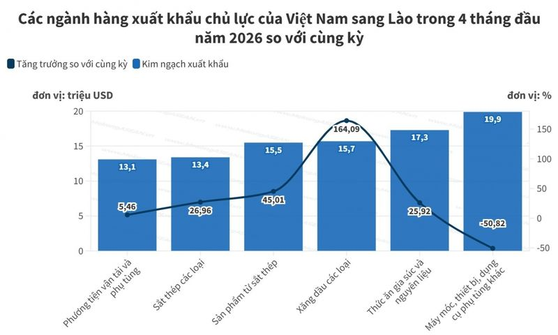
Xuất khẩu xăng dầu sang Lào tăng gần 3 lần trong 4 tháng đầu năm 🔗 MOI
Trong 4 tháng đầu năm nay, xuất khẩu hàng hóa của Việt Nam sang Lào tăng gần 17% so với cùng kỳ, được dẫn dắt bởi đà bứt phá mạnh mẽ của mặt hàng xăng dầu với mức tăng đột biến hơn 164%. Theo báo cáo
Thượng đỉnh Mỹ-Trung: Doanh nghiệp kỳ vọng mở rộng hợp tác kinh tế 🔗 MOI
Facebook Twitter Lưu bài viết Bản in Copy link Không chỉ là cuộc gặp giữa hai nền kinh tế lớn nhất thế giới, hội nghị thượng đỉnh Mỹ-Trung còn được xem là phép thử đối với khả năng kiểm soát cạnh tran
Tổng thống Mỹ Trump mắc kẹt với chiến thuật dồn Iran vào chân tường 🔗 MOI
Tổng thống Mỹ Donald Trump. (Ảnh: AP) Nhưng với Iran, kiểu ngoại giao cưỡng ép ấy - với những lời đe dọa công khai, phát biểu công kích và tối hậu thư - dường như đã chạm tới giới hạn, thậm chí có ngu
Chiến sự Trung Đông ngày 79: Ông Trump cảnh báo ‘sự yên bình trước cơn bão’; Mỹ chấm dứt miễn trừ dầu Nga 🔗 MOI
(PLO)- Chủ tịch Quốc hội Iran nói rằng “thế giới đang đứng trước ngưỡng cửa của một trật tự mới”; Mỹ chuyển hướng 78 tàu trong thời gian phong toả các cảng Iran; Tổng thư ký LHQ hoan nghênh việc gia h
Subaru hoãn vô thời hạn dự án xe điện 🔗 MOI
Quyết định này được đưa ra trong bối cảnh đà tiêu thụ xe điện trên toàn cầu đang sụt giảm mạnh mẽ, buộc hãng xe Nhật Bản phải nhanh chóng chuyển dịch nguồn lực sang các dòng xe hybrid và xe chạy xăng
[Video] Thượng đỉnh Mỹ - Trung tạo kỳ vọng mới cho kinh tế toàn cầu 🔗 MOI
Nhiều tổ chức quốc tế và chuyên gia đánh giá đối thoại cấp cao giữa hai nền kinh tế lớn nhất thế giới được kỳ vọng góp phần giảm căng thẳng thương mại và củng cố niềm tin thị trường. Tuy nhiên, các kh
Tích hợp AI vào vận hành doanh nghiệp, chuyển từ quản trị cảm tính sang quản trị dữ liệu 🔗 MOI
Tiến sĩ Thái Kim Phụng (Đại học Kinh tế TP.HCM) cho rằng phần lớn các doanh nghiệp của tỉnh Khánh Hòa còn quản trị phụ thuộc vào kinh nghiệm cá nhân - Ảnh: NGUYỄN HOÀNG Ngày 16-5, UBND tỉnh Khánh Hòa

Phát huy vai trò chủ đạo của kinh tế nhà nước trong kỷ nguyên mới 🔗 MOI
Kinh tế Thay vì dựa trên quy mô sở hữu, bài viết phân tích vai trò của kinh tế nhà nước trong nền kinh tế Việt Nam theo cách tiếp cận chức năng: ổn định kinh tế vĩ mô, định hướng phát triển và thiết l
“Mỏ vàng” của Petrovietnam tại nơi băng giá âm 50 độ C, 28 người Việt mang về hàng trăm triệu USD mỗi năm 🔗 MOI
TIN MỚI Thực hiện chủ trương đầu tư ra nước ngoài, Petrovietnam đã triển khai nhiều dự án dầu khí tại các quốc gia trên thế giới. Trong đó, liên doanh Rusvietpetro giữa Petrovietnam và Zarubezhneft củ
Phe Dân chủ cáo buộc ông Trump trục lợi từ cổ phiếu Nvidia 🔗 MOI
CEO Nvidia Jensen Huang và Tổng thống Mỹ Donald Trump bắt tay tại sự kiện đầu tư vào nước Mỹ - Ảnh: REUTERS Theo Hãng tin AFP, ngày 15-5, phe Dân chủ lên tiếng cáo buộc Tổng thống Mỹ Donald Trump có h

Dự thảo văn kiện Đại hội XIV của Đảng: Nhìn từ lăng kính kinh tế - tài chính 🔗 MOI
Thời sự Dự thảo Báo cáo chính trị trình Đại hội XIV của Đảng đặt mục tiêu tăng trưởng GDP giai đoạn 2026–2030 đạt từ 10%/năm trở lên với định hướng rõ ràng chuyển đổi mô hình tăng trưởng dựa vào khoa
Sau chuyến thăm Bắc Kinh, ông Trump quyết xây công trình tầm cỡ ngay Washington 🔗 MOI
Ông Trump lên chuyên cơ Không lực Một về nước sau chuyến thăm cấp nhà nước tới Trung Quốc - Ảnh: AFP Theo Đài CNN, ngày 15-5, Tổng thống Mỹ Donald Trump chính thức công bố kế hoạch xây công viên tượng

Đổi mới mô hình tăng trưởng gắn với tái cơ cấu nền kinh tế trong giai đoạn mới 🔗 MOI
Pháp luật Triển khai Nghị quyết số 07-NQ/TW ngày 18/11/2016 của Bộ Chính trị về chủ trương, giải pháp cơ cấu lại ngân sách nhà nước, quản lý nợ công, việc cơ cấu lại ngân sách nhà nước, quản lý nợ côn
Mỹ tuyên bố tiêu diệt phó thủ lĩnh toàn cầu của IS 🔗 MOI
Tổng thống Mỹ Donald Trump tuyên bố Abu-Bilal al-Minuki, nhân vật được mô tả là quyền lực thứ hai toàn cầu của tổ chức Nhà nước Hồi giáo (IS) tự xưng, đã bị tiêu diệt trong một chiến dịch diễn ra ngày

Tiếp nhận phản ánh kiến nghị của doanh nghiệp 🔗 MOI
HỌ VÀ TÊN * EMAIL * SỐ ĐIỆN THOẠI * ĐỊA CHỈ * TIÊU ĐỀ * FILES ĐÍNH KÈM NỘI DUNG * RadEditor - HTML WYSIWYG Editor. MS Word-like content editing experience thanks to a rich set of formatting tools, dro
Anh trai Michael Jackson bị kiện hơn 6.5 triệu đô vì tội cưỡng hiếp 🔗 MOI
Theo People, trong phán quyết vắng mặt được đệ trình tại Tòa án cấp cao Quận Los Angeles (Mỹ), ca sĩ 71 tuổi Jermaine Jackson bị buộc phải chi trả khoản tiền bồi thường thiệt hại và các chi phí pháp l

Khơi thông các động lực tăng trưởng kinh tế Việt Nam 🔗 MOI
Pháp luật Nhờ sự phối hợp đồng bộ của chính sách tài khóa và tiền tệ trong việc thúc đẩy cầu trong nước, kinh tế Việt Nam năm 2025 phục hồi mạnh, với tăng trưởng vượt mục tiêu đề ra. Về ổn định kinh t
Đang bốc hơn 260 kg pháo nổ lên ô tô thì công an ập tới 🔗 MOI
(PLO)- Qua kiểm tra, công an còn phát hiện trên xe có hơn 7.000 bao thuốc lá nhập lậu cùng với số pháo nổ nói trên. Ngày 16-5, Phòng Cảnh sát kinh tế Công an tỉnh Quảng Trị thông tin, vừa bắt giữ hai
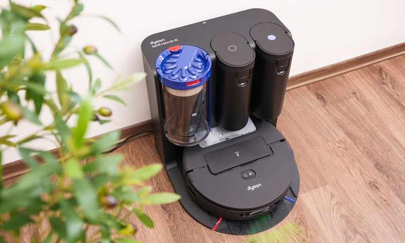
Trải nghiệm Spot+Scrub AI - robot lau nhà đầu tiên của Dyson 🔗 MOI
Trải nghiệm Dyson Spot+Scrub - Đối đấu các hãng Trung Quốc Dù nổi tiếng với dòng máy hút bụi cầm tay nhiều năm qua, mẫu Spot+ Scrub AI, ra mắt đầu năm, mới là robot hút bụi lau nhà đầu tiên của Dyson.
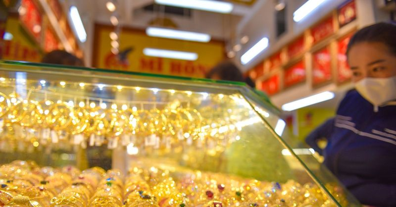
Dự báo giá vàng, giá bạc sẽ phục hồi trong tuần tới 🔗 MOI
Tính chung trong hai phiên gần nhất, giá vàng thế giới giảm 179 USD/ounce, tương đương mức giảm 5,7 triệu đồng/lượng - Ảnh: N.P. Giảm 3,8%, giá vàng rơi khỏi ngưỡng 4.600 USD/ounce Tính chung trong ha
Năng lượng & Khoáng sản 🔗 MOI
Ngày 9/4, Ủy ban Thường vụ Quốc hội đã cho ý kiến về dự thảo Nghị quyết của Quốc hội về việc ban hành một số quy định về thuế bảo vệ môi trường, thuế giá trị gia tăng, thuế tiêu thụ đặc biệt đối v
Giá vàng hôm nay 17/5/2026 lao dốc cuối tuần, SJC mất 4 triệu đồng/lượng 🔗 MOI
Giá vàng thế giới hôm nay 17/5/2026 Giá vàng thế giới lao dốc mạnh trong phiên giao dịch cuối tuần. Thị trường ghi nhận một trong những phiên giảm sâu nhất kể từ đầu năm khi hàng loạt yếu tố bất lợi đ
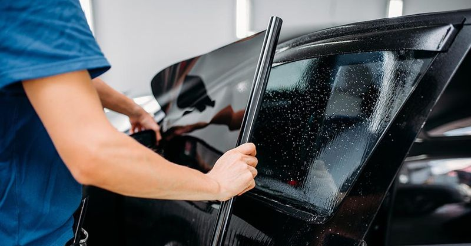
4 phụ kiện ô tô đáng để đầu tư, phù hợp với điều kiện lái xe ở Việt Nam 🔗 MOI
Dưới đây là những phụ kiện ô tô đáng tiền, phù hợp với điều kiện sử dụng tại Việt Nam theo ghi nhận tổng hợp của PV VietNamNet từ các nhóm người dùng xe. 1. Camera hành trình Với tình trạng giao thông
Công an phường mở 'giờ vàng' ban đêm hỗ trợ dân làm thủ tục online 🔗 MOI
19 giờ, điện thoại hỗ trợ trực tuyến của Công an P.Xuân Hương - Đà Lạt vẫn liên tục nhận cuộc gọi, tin nhắn từ người dân cần hướng dẫn thủ tục. Thượng tá Hồ Đại Dương, Trưởng công an P.Xuân Hương - Đà
Giới siêu giàu trả 85 triệu USD cho bức họa phủ sắc đỏ đen 🔗 MOI
Các chuyên gia xử lý tác phẩm nghệ thuật đang cầm bức tranh "Brown and Blacks in Reds" của Mark Rothko tại nhà đấu giá Sotheby's ở New York (Mỹ) - Ảnh: John Nacion Bức tranh Brown and Blacks in Reds (
Đám cưới độc lạ: Chú rể đấu vật với cô dâu, ai thua làm việc nhà suốt đời 🔗 MOI
Cô dâu quật ngã chú rể He Yinsheng và được "miễn việc nhà suốt đời" - Ảnh: ETTODAY.NET Báo South China Morning Post ngày 16-5 đưa tin một cặp đôi tại Trung Quốc đã biến ngày cưới của mình thành một tr
Nhà vô địch cờ tướng Trung Quốc bại trận trước cậu học sinh 16 tuổi 🔗 MOI
Lưu Bách Hoành là thần đồng số 2 của làng cờ tướng Trung Quốc - Ảnh: BAIDU Cuộc so tài giữa Lưu Bách Hoành Và Vương Vũ Bác ở Tân Thái Bôi đã tái hiện trận chung kết Giải vô địch cờ tướng Trung Quốc 20
Yêu cầu xác thực sinh trắc học qua eTax Mobile để ngăn doanh nghiệp ma bán hóa đơn khống 🔗 MOI
Thông báo của Thuế Bắc Ninh Ngăn tình trạng đánh cắp thông tin CCCD để lập doanh nghiệp ma, xuất hóa đơn khống rồi bỏ trốn Hàng loạt thuế tỉnh, thành phố và thuế cơ sở như Thuế Bắc Ninh, Thuế cơ sở 3
NYT: Mỹ - Israel gấp rút chuẩn bị đợt tấn công Iran quy mô lớn 🔗 MOI
Tiêm kích F-15 của Không quân Israel ngày 6-4 - Ảnh: TIMES OF ISRAEL Theo báo New York Times , các nguồn tin Trung Đông cho biết Israel và Mỹ hiện tiến hành mức độ chuẩn bị quân sự căng thẳng nhất kể
Kiểm tra thực địa, rà soát tiến độ triển khai các công trình phục vụ APEC 2027 🔗 MOI
Phó thủ tướng Phạm Gia Túc cùng đoàn Chính phủ đi kiểm tra các dự án APEC 2027 ở Phú Quốc - Ảnh: XUÂN MI Theo đó, Phó thủ tướng Phạm Gia Túc cùng đoàn công tác đã đến kiểm tra thực địa dự án mở rộng C

Kiến tạo không gian phát triển mới cho kinh tế tập thể 🔗 MOI
Pháp luật Trong giai đoạn 2021-2025, dựa vào mục tiêu phát triển, điều kiện ngân sách và nhu cầu hỗ trợ, năng lực của các hợp tác xã, Thủ tướng Chính phủ đã ban hành Chương trình hỗ trợ phát triển kin

Nhìn lại 1 năm thực thi Nghị quyết 68-NQ/TW 🔗 MOI
Doanh nghiệp Sau 1 năm triển khai Nghị quyết số 68-NQ/TW, nhiều doanh nghiệp công nghệ Việt ghi nhận những chuyển biến tích cực từ môi trường kinh doanh, cơ chế hỗ trợ và tư duy điều hành theo hướng k
Tổng thống Nga Putin sẽ thăm Trung Quốc vào tuần tới 🔗 MOI
Tổng thống Nga Vladimir Putin sẽ thực hiện chuyến thăm chính thức tới Trung Quốc vào các ngày 19-20/5, theo lời mời của Chủ tịch Trung Quốc Tập Cận Bình. Tổng thống Nga Vladimir Putin và Chủ tịch Trun
Tạp chí Kinh tế Sài Gòn 🔗 MOI
Kinh tế Sài Gòn giữ bản quyền nội dung của trang web thesaigontimes.vn. Không sử dụng lại nội dung trên trang này dưới mọi hình thức, trừ khi được Kinh tế Sài Gòn đồng ý bằng văn bản. Trang ngoài sẽ đ
Tạp chí Kinh tế Sài Gòn 🔗 MOI
Kinh tế Sài Gòn giữ bản quyền nội dung của trang web thesaigontimes.vn. Không sử dụng lại nội dung trên trang này dưới mọi hình thức, trừ khi được Kinh tế Sài Gòn đồng ý bằng văn bản. Trang ngoài sẽ đ
Tạp chí Kinh tế Sài Gòn 🔗 MOI
Kinh tế Sài Gòn giữ bản quyền nội dung của trang web thesaigontimes.vn. Không sử dụng lại nội dung trên trang này dưới mọi hình thức, trừ khi được Kinh tế Sài Gòn đồng ý bằng văn bản. Trang ngoài sẽ đ
Tạp chí Kinh tế Sài Gòn 🔗 MOI
Kinh tế Sài Gòn giữ bản quyền nội dung của trang web thesaigontimes.vn. Không sử dụng lại nội dung trên trang này dưới mọi hình thức, trừ khi được Kinh tế Sài Gòn đồng ý bằng văn bản. Trang ngoài sẽ đ
Chuyện tình từ lần lỡ hẹn của chàng trai Na Uy và cô gái Hà Nội 🔗 MOI
Mùa hè năm 2023 tại thành phố Oslo, sau khi nộp xong luận văn thạc sĩ, Nguyễn Hải Hậu, 28 tuổi, quê Sơn Tây (Hà Nội), thử dùng ứng dụng hẹn hò. Cô gái Hà Nội dừng lại trước hồ sơ của một chàng trai Na

LẰN RANH: Khi lòng tốt đặt sai chỗ 🔗 MOI
Một người bạn xã giao viện cớ ra ngoài nghe điện thoại, nhờ Minh cầm giúp chiếc túi xách tay. Minh vô tư nhận lời. Chỉ 10 phút sau, lực lượng chức năng ập vào kiểm tra, người bạn kia bặt vô âm tín.
4 cháu bé tử vong tại hồ thủy điện ở Đắk Lắk 🔗 MOI
Tối 16.5, một lãnh đạo UBND xã Hòa Mỹ (Đắk Lắk) cho biết lực lượng chức năng đã nỗ lực tìm kiếm và vớt được thi thể của 4 cháu bé tử vong do đuối nước trên địa bàn. Theo thông tin ban đầu, trưa cùng n
Giao trách nhiệm phát triển, cú hích tăng trưởng kinh tế 🔗 MOI
Trao quyền tự chủ, phát huy tiềm lực của địa phương Mới đây, Bộ Tài chính cho biết đã rà soát, dự kiến 34 chỉ tiêu của địa phương trong giai đoạn 2026 - 2030 và năm 2026. Trước mắt, Bộ sẽ trình Chính
Tai nạn giao thông nghiêm trọng ở Bangkok, 8 người tử vong tại chỗ, hàng chục người bị thương 🔗 MOI
TIN MỚI Theo thông tin ban đầu, vụ việc xảy ra khoảng 15 giờ 40 phút (giờ địa phương) chiều 16-5, trên đường Asok-Din Daeng, đoạn giao cắt với tuyến đường sắt bên dưới ga Makkasan thuộc hệ thống đường
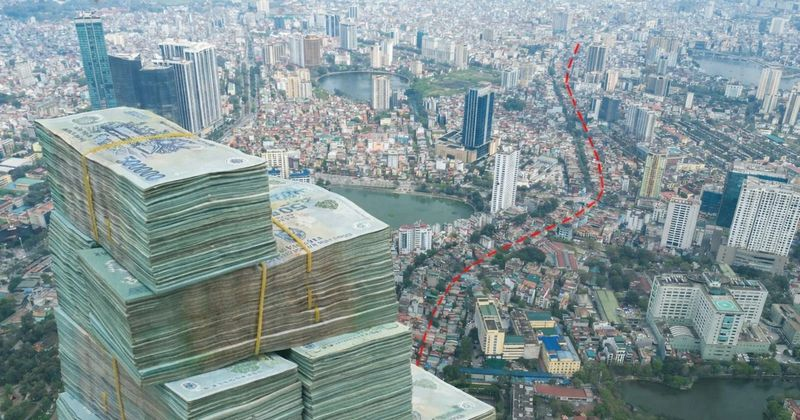
Lãi suất vay mua nhà hiện ra sao? 🔗 MOI
Theo khảo sát thị trường, tháng 5, lãi suất vay mua nhà phổ biến hiện nay dao động từ 8-10%/năm trong thời gian ưu đãi ban đầu. Tuy nhiên, mức lãi này chỉ áp dụng trong 6 - 24 tháng đầu, sau đó sẽ chu
Xung đột Trung Đông trước nguy cơ leo thang lớn 🔗 MOI
Mỹ, Israel chuẩn bị Tờ The New York Times ngày 16.5 dẫn lời các quan chức Mỹ phụ trách vấn đề Trung Đông cho hay Mỹ và Israel đang tiến hành các hoạt động khẩn trương, với quy mô lớn nhất kể từ khi lệ

UAV mở hướng phát triển kinh tế vùng núi 🔗 MOI
Tại tỉnh Điện Biên, FPT đã thử nghiệm thiết bị, phương tiện bay không người lái (UAV) hỗ trợ vận chuyển nông sản, giám sát cây trồng, kiểm soát dịch bệnh, quản lý rừng và logistics tại các khu vực có
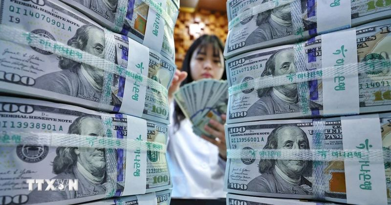
Khủng hoảng Trung Đông gây áp lực lớn lên dự trữ ngoại hối châu Á 🔗 MOI
Facebook Twitter Lưu bài viết Bản in Copy link Dự trữ ngoại hối tại nhiều nền kinh tế châu Á đang suy giảm mạnh khi các chính phủ phải chi nguồn lực để bảo vệ đồng nội tệ trước cú sốc giá dầu tăng cao
Vừa chạy xe điện vừa sạc bằng máy phát điện diesel, tài xế nhận kết đắng 🔗 MOI
Người đàn ông vừa lái xe vừa sạc Tesla bằng máy phát điện, bị cảnh sát chặn lại - Dashcam France Vụ việc xảy ra trên cao tốc tại Pháp, khi cảnh sát phát hiện một chiếc xe điện Tesla chạy với cốp sau m
Ru cảnh, ru tình với Phan Minh Bạch 🔗 MOI
Họa sĩ Phan Minh Bạch và bức tranh trong bộ Ru cảnh - Ảnh: T.ĐIỂU Đây là triển lãm cá nhân lần thứ hai của họa sĩ Phan Minh Bạch , đang diễn ra tại Bảo tàng Mỹ thuật Việt Nam. Các tác phẩm được thực h

Chuyên đề Agribank 🔗 MOI
Trước áp lực thực thi Nghị định số 70/2025/NĐ-CP về hóa đơn điện tử và quản lý thuế, Agribank tổ chức hội nghị tập huấn toàn quốc, thống nhất quy trình hỗ trợ và giới thiệu gói giải pháp số dành riêng
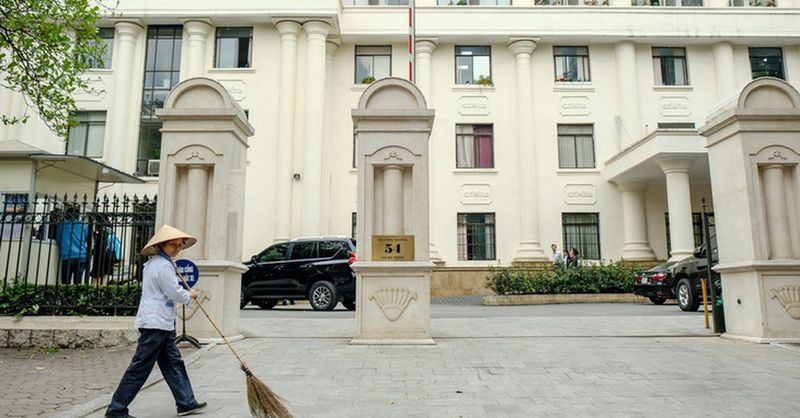
Bộ Công Thương đề xuất thành lập Cục Năng lượng - Dầu khí 🔗 MOI
Trụ sở Bộ Công Thương - Ảnh: N.TRẦN Theo bộ này, so với yêu cầu, nhiệm vụ công tác trong tình hình mới, cùng với những kết quả đạt được, tổ chức bộ máy bên trong của bộ còn một số tồn tại, hạn chế. Ch

TỔNG QUAN TỔNG QUAN KINH TẾ 🔗 MOI
Kinh tế Hoạt động điều hành chính sách tài khóa năm 2025 diễn ra trong bối cảnh tình hình kinh tế trong nước và quốc tế tiếp tục diễn biến phức tạp, căng thẳng thương mại toàn cầu gia tăng, đặc biệt l

Hưởng lợi từ giá phân bón, DPM lãi lớn quý đầu năm 🔗 MOI
Báo sau thuế hơn 410 tỷ đồng trong quý 1/2026, DPM đã hoàn thành tới 60% mục tiêu lợi nhuận năm chỉ sau một quý đầu năm. Ảnh: PVFCCo - Phú Mỹ. Tổng công ty Phân bón và Hóa chất Dầu khí (PVFCCo -
Khởi công Khu công nghiệp Xuân Kiên giai đoạn 1 quy mô hơn 1.200 tỷ đồng 🔗 MOI
Ngày 16/5, UBND tỉnh Ninh Bình tổ chức lễ khởi công khu công nghiệp Xuân Kiên giai đoạn 1 với diện tích khoảng 100 ha. Các đại biểu thực hiện nghi thức khởi công dự án khu công nghiệp Xuân Kiên giai đ
AgriS: Chuyển giao thế hệ cho giai đoạn tăng trưởng mới 🔗 MOI
Sau giai đoạn chuyển giao lãnh đạo, CTCP Thành Thành Công – Biên Hòa (AgriS, HoSE: SBT) đang triển khai nhiều thay đổi về chiến lược, vận hành và định hướng thị trường, trong bối cảnh doanh nghiệp bướ

Tiếp nhận phản ánh kiến nghị của công dân 🔗 MOI
HỌ VÀ TÊN * EMAIL * SỐ ĐIỆN THOẠI * ĐỊA CHỈ * TIÊU ĐỀ * FILES ĐÍNH KÈM NỘI DUNG * RadEditor - HTML WYSIWYG Editor. MS Word-like content editing experience thanks to a rich set of formatting tools, dro
Chiến sự Nga - Ukraine 17-5: Ông Zelensky công bố video Ukraine tấn công mục tiêu quân sự Nga; Moscow tiến quân ở Kharkiv 🔗 MOI
Chiến sự Nga - Ukraine tiếp tục leo thang khi hai bên gia tăng cường độ không kích. Ông Zelensky công bố video Ukraine tấn công mục tiêu Nga . Ngày 16-5, Tổng thống Volodymyr Zelensky cho biết Ukraine
'Nữ tướng' Công ty Cơ điện lạnh sắp rời ghế chủ tịch 🔗 MOI
Tuần qua, VN-Index tăng 6,23 điểm lên 1.921,6 điểm. Tương tự, HNX-Index tăng 10,93 điểm lên mức 257,42 điểm. Thanh khoản trong tuần giảm, khối lượng giao dịch giảm 3,6% so tuần trước.
Chiến sự Ukraine ngày 1.543: Ukraine đánh nhà máy phân bón, Nga tiến lên ở tiền tuyến 🔗 MOI
Hỏa hoạn được cho là tại nhà máy Nevinnomyssk Azot ẢNH CHỤP MÀN HÌNH THE KYIV INDEPENDENT Theo trang tin Astra ngày 16.5, một vụ hỏa hoạn đã bùng phát tại nhà máy Nevinnomyssk Azot ở vùng Stavropol ph
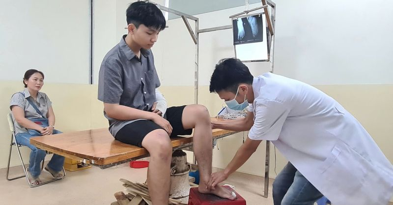
Người mẹ viết thư cảm ơn sau khi con trai thoát chết nhờ báo động đỏ liên viện 🔗 MOI
Dũng cùng mẹ đến Bệnh viện Đa khoa khu vực Hóc Môn tái khám, sau hơn nửa tháng trải qua cuộc mổ đa chấn thương nguy kịch - Ảnh: Bệnh viện cung cấp Ngày 16-5, Bệnh viện Đa khoa khu vực Hóc Môn cho biết
Bộ Công an: Nghiêm khắc xử lý việc dùng AI, deepfake phát tán tin sai sự thật 🔗 MOI
Thượng tá Triệu Mạnh Tùng - Phó cục trưởng Cục An ninh mạng và phòng, chống tội phạm sử dụng công nghệ cao - trao đổi tại tọa đàm - Ảnh: Bộ Công an Tại tọa đàm chính sách về một số văn bản quy phạm ph

Ban hành danh mục 15 bộ dữ liệu phục vụ phát triển AI 🔗 MOI
Phó Thủ tướng Hồ Quốc Dũng vừa ký Quyết định số 804/QĐ-TTg ngày 6/5 ban hành danh mục bộ dữ liệu phục vụ phát triển trí tuệ nhân tạo (AI) trong các lĩnh vực thiết yếu. Theo quyết định, danh mục bộ dữ

Ấn phẩm 🔗 MOI
Tạp chí Kinh tế - Tài chính Online. Cơ quan chủ quản: Bộ Tài chính Giấy phép xuất bản số: 107/GP-BVHTTDL ngày 26/8/2025. Tạp chí Kinh tế - Tài chính Online: e-ISSN 3093-3498.
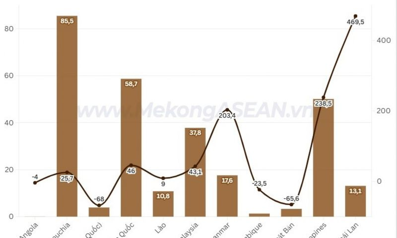
Kim ngạch xuất khẩu phân bón tăng tới 100% trong 4 tháng 🔗 MOI
Sự đột biến cả về lượng và giá trong 4 tháng đầu năm 2026 đã đưa kim ngạch xuất khẩu phân bón của Việt Nam tăng trưởng tới ba con số, lên gần 600 triệu USD. Xuất khẩu phân bón sang nhiều thị trường bứ

Chính phủ với doanh nghiệp 🔗 MOI
20/03/2026 (Chinhphu.vn) - Chính phủ ban hành Nghị quyết số 11/2026/NQ-CP về chi phí tiền lương Ngân hàng thương mại TNHH một thành viên Xây dựng Việt Nam, Ngân... 04/03/2026 (Chinhphu.vn) - Chính phủ

Tham vấn chính sách 🔗 MOI
15/05/2026 (Chinhphu.vn) - Bộ Tài chính đang dự thảo Nghị định sửa đổi, bổ sung một số điều của Nghị định số 113/2024/NĐ-CP ngày 12/9/2024 của Chính phủ quy... 14/05/2026 (Chinhphu.vn) - Bộ Tài chính
Điểm nóng xung đột ngày 17-5: Hé lộ ý định của UAE với Iran? 🔗 MOI
Theo Bloomberg ngày 15-5, Tổng thống UAE Sheikh Mohammed bin Zayed đã điện đàm với các lãnh đạo khu vực ngay sau khi Mỹ và Israel bắt đầu không kích Iran vào ngày 28-2. Bloomberg dẫn lời các nguồn thạ
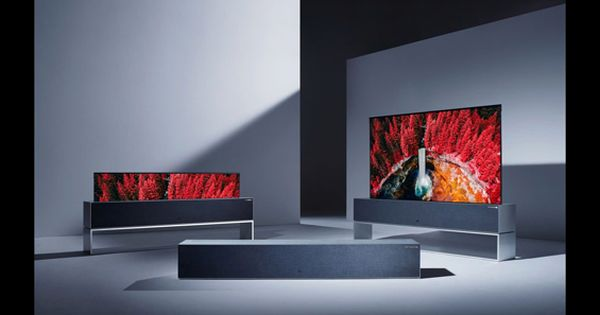
Cuộc "lột xác" của TV thời AI 🔗 MOI
Trong khi vẫn chạy theo xu hướng nâng cấp các tính năng trí tuệ nhân tạo (AI) và tích hợp những công nghệ nghe nhìn mới, nhiều hãng công nghệ đã "thay da đổi thịt" các dòng TV, tạo ra những sản phẩm n
Quán cà-phê do AI quản lý 🔗 MOI
Theo Euronews, AI này đảm nhiệm từ tuyển dụng nhân viên, đặt nguyên liệu, kiểm soát tồn kho đến điều phối hoạt động hằng ngày. Khách hàng thậm chí có thể trò chuyện trực tiếp với AI thông qua điện tho
Tìm lại vị thế 🔗 MOI
Với gói đầu tư khổng lồ vừa được ký kết, Pháp muốn tìm kiếm lại vai trò và sức ảnh hưởng tại “lục địa đen”. Theo AP, Hội nghị Africa Forward năm nay quy tụ hơn 30 nhà lãnh đạo châu Phi, tập trung thảo
🔗 MOI
Tiếp nối thành công và sức lan tỏa từ 2 mùa trước, Cuộc thi phim ngắn Việt Nam – Vietnamese chính thức trở lại. Mùa 3 tiếp tục khẳng định vai trò là bệ phóng cho những tiếng nói điện ảnh trẻ, nơi các
Thủ khoa AI được cấp học bổng thạc sĩ kèm 15 triệu đồng/tháng 🔗 MOI
Thủ khoa đầu ra Phạm Gia Kiệt - Ảnh: T.K. Sáng 16-5, Trường đại học Quốc tế Sài Gòn (SIU) tổ chức lễ tốt nghiệp thạc sĩ, cử nhân năm 2026. Đáng chú ý, tân cử nhân Phạm Gia Kiệt - sinh viên chuyên ngàn
Người đi bộ ngã gục sau khi xe tải tông gãy thanh chắn chiều cao 🔗 MOI
Xe tải va vào thanh chắn chiều cao đập trúng người đi bộ - Video: Sina/X Theo Sina, ngày 13-5, tại thành phố Bắc An, thuộc địa cấp thị Hắc Hà, tỉnh Hắc Long Giang (Trung Quốc), một vụ tai nạn xảy ra v

Trẻ sinh ra di truyền giang mai từ mẹ có điều trị được không? 🔗 MOI
Các võ sĩ Việt Nam thắng lớn ở đấu trường mạnh nhất làng kung fu Trung Quốc 🔗 MOI
Võ sĩ Trương Văn Chưởng gây ấn tượng với hạng cân nặng của môn võ số 1 làng kung fu Trung Quốc - Ảnh: IWUF Một ngày sau khi Đinh Văn Tâm vô địch hạng cân 52kg nam, ngày 16-5 võ sĩ Trương Văn Chưởng và
Báo Trung Quốc: 'Đội chúng ta mạnh nhất lịch sử, sẽ vô địch U17 châu Á' 🔗 MOI
U17 Trung Quốc đang chơi ngày một hay - Ảnh: GLOBAL Rạng sáng 16-5 (giờ Việt Nam), U17 Trung Quốc gây ấn tượng mạnh khi lội ngược dòng đánh bại U17 Saudi Arabia 3-1 ở tứ kết Giải U17 châu Á 2026. Theo
Độc lạ màn cô dâu đấu vật với chú rể để xem ai phải làm việc nhà suốt đời 🔗 MOI
🔗 MOI
Ở tuổi 40, nhiều người bắt đầu lo chuyện tóc bạc, da nhăn hay khám sức khỏe định kỳ. Nhưng với nam diễn viên này, vấn đề anh phải đối mặt lại khá đặc biệt, khi liên tục bị hỏi "cháu học lớp mấy?", dù
Kỷ lục phòng vé Việt Nam năm 2025 khó lặp lại trong nhiều năm tới 🔗 MOI
Các diễn giả có nhiều chia sẻ tại tọa đàm "Vai trò nhà làm phim trẻ trong định vị điện ảnh Việt" - Ảnh: BTC Chiều 16-5, tại TP.HCM diễn ra lễ phát động Cuộc thi phim ngắn Việt Nam - Vietnamese 2026 mù

Kiểm soát lạm phát trước những "biến số" cuối năm 🔗 MOI
Tài chính Tại Nghị quyết số 86/NQ-CP ngày 4/11/2025 về triển khai nhiệm vụ trọng tâm những tháng cuối năm 2025, Chính phủ tiếp tục yêu cầu về kiểm soát lạm phát, giữ vững ổn định kinh tế vĩ mô. Trong
Công Phượng ghi tuyệt phẩm, CLB Trường Tươi Đồng Nai thắng đậm 🔗 MOI
Công Phượng ăn mừng bàn thắng cho CLB Trường Tươi Đồng Nai trước Đại học Văn Hiến - Ảnh: TTĐNFC Tối 16-5, CLB Trường Tươi Đồng Nai tiếp Đại học Văn Hiến trên sân Bình Phước ở vòng 19 Giải hạng nhất 20
VTV Bình Điền Long An thắng trận đầu tiên ở giải bóng chuyền quốc tế 🔗 MOI
Niềm vui của VTV Bình Điền Long An khi thắng trận đầu tiên - Ảnh: ĐỨC KHUÊ Ngày ra quân, VTV Bình Điền Long An đã để thua 1-3 trước Giang Tô (Trung Quốc). Do đó để giành vé đi tiếp, họ buộc phải thắng
Công ty trách nhiệm một mình 🔗 MOI
Bên trong Khu cộng đồng đổi mới sáng tạo trí tuệ nhân tạo Bắc Vĩ ở thành phố Bắc Kinh - trung tâm trọng điểm hỗ trợ và nuôi dưỡng nhân tài khởi nghiệp theo mô hình OPC - Ảnh: UCAS Cùng với nó là khái
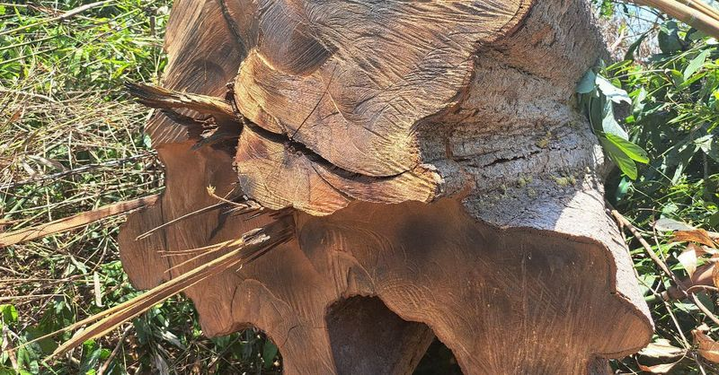
Hai bị cáo phá rừng kơ nia biên giới lãnh án 🔗 MOI
Một thân cây kơ nia bị cưa hạ tại hiện trường vụ phá rừng ở xã biên giới Ia Tơi, tỉnh Quảng Ngãi (thuộc huyện Ia H'Drai, tỉnh Kon Tum cũ) - Ảnh: T.H. Ngày 16-5, nguồn tin cho hay Tòa án nhân dân khu v
Đang bốc xếp 260kg pháo và 7.600 gói thuốc lá lên xe tải thì bị bắt quả tang 🔗 MOI
Phạm Thế Nam cùng tang vật - Ảnh: TRẦN KHÔI Ngày 16-5, Phòng Cảnh sát kinh tế Công an tỉnh Quảng Trị cho hay đơn vị vừa triệt phá vụ vận chuyển hàng cấm quy mô lớn, thu giữ khoảng 260kg pháo hoa nổ cù
Nhà Trắng náo loạn vì... hàng ngàn con ong 🔗 MOI
Đoạn video ghi lại cảnh bãi cỏ phía Bắc Nhà Trắng bất ngờ bị hàng ngàn con ong bao vây - Nguồn: X Theo Fox News , Nhà Trắng ngày 15-5 bất ngờ "náo loạn" khi hàng ngàn con ong xuất hiện trên bãi cỏ phí
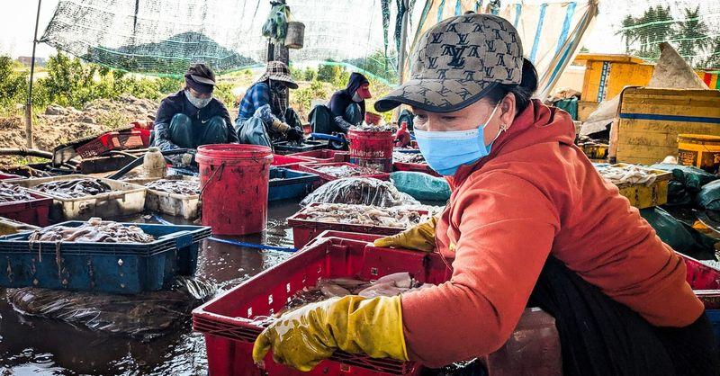
Chủ tịch Gia Lai chỉ đạo xử lý triệt để nạn sơ chế mực xà gây ô nhiễm 🔗 MOI
Hoạt động sơ chế mực xà tại xã Đề Gi, Gia Lai, gây ô nhiễm môi trường kéo dài, ảnh hưởng đời sống, sinh hoạt hàng ngàn người dân - Ảnh: TẤN LỰC Ngày 16-5, UBND tỉnh Gia Lai đã có công văn truyền đạt ý
Cảnh sát tóm gọn kẻ cướp giật điện thoại trên tỉnh lộ 10 chỉ sau 30 phút 🔗 MOI
Nghi can cướp giật điện thoại bị cảnh sát bắt giữ - Ảnh: Công an TP.HCM Ngày 16-5, Công an TP.HCM cho biết Công an phường Bình Trị Đông đã truy xét nhanh, bắt giữ Trần Song Toàn (31 tuổi, ngụ phường C
Rủ nhau đi tắm sông, 4 học sinh chết đuối thương tâm 🔗 MOI
Khu vực sông nơi 4 em học sinh tắm bị chết đuối - Ảnh: Người dân cung cấp Tối 16-5, lãnh đạo UBND xã Hòa Mỹ, Đắk Lắk cho hay đã tìm thấy thi thể em học sinh cuối cùng vào khoảng 21h cùng ngày. Lực lượ

Huy động tài chính xanh hướng tới mục tiêu phát triển bền vững 🔗 MOI
Pháp luật Chuyển đổi năng lượng xanh đã trở thành xu thế toàn cầu mang tính bắt buộc, gắn liền với mục tiêu Net Zero và yêu cầu cạnh tranh trong chuỗi cung ứng quốc tế. Trong bối cảnh đó, doanh nghiệp

Tạp chí Kinh tế Tài chính kỳ 2 tháng 4/2026 🔗 MOI

Góc chuyên gia & nhà quản lý 🔗 MOI
Trí tuệ nhân tạo (AI) đang thay đổi cách ngân hàng vận hành, từ phát hiện gian lận, quản trị rủi ro đến chăm sóc khách hàng. Tuy nhiên, theo chuyên gia của HSBC, trong lĩnh vực tài chính - ngân hàng,

Bảo vệ nhà đầu tư trước “cơn sốt” tài sản mã hóa 🔗 MOI
Chứng khoán Trong bối cảnh Việt Nam đang từng bước xây dựng khung pháp lý và chuẩn bị thí điểm thị trường tài sản mã hóa theo Nghị quyết số 05/2025/NQ-CP của Chính phủ, bài toán về an toàn hệ thống, m

Kỷ niệm 51 năm Ngày Giải phóng miền Nam, thống nhất đất nước: Tự chủ chiến lược, kiến tạo thịnh vượng 🔗 MOI
Kinh tế Trong bối cảnh cạnh tranh thu hút đầu tư công nghệ ngày càng quyết liệt, Việt Nam đang chủ động mở cánh cửa ra thế giới để đón các “đại bàng công nghệ”, coi đây là động lực quan trọng để chuyể

Nước CHXHCN Việt Nam 🔗 MOI
© Cổng Thông tin điện tử Chính phủ Tổng Giám đốc: Nguyễn Hồng Sâm Trụ sở: 16 Lê Hồng Phong - Ba Đình - Hà Nội. Điện thoại: Văn phòng: 080 43162; Fax: 080.48924 Email: thongtinchinhphu@chinhphu.vn Bản
[Video] Tòa án Moskva ra phán quyết lớn về tài sản Nga tại EU 🔗 MOI
Phía Nga cho rằng việc sử dụng tài sản bị đóng băng để hỗ trợ Ukraine là trái luật quốc tế và vi phạm nguyên tắc miễn trừ chủ quyền. Trong khi đó, Euroclear tuyên bố không công nhận thẩm quyền của tòa
16.000 tỷ đồng ‘chảy’ vào túi người Việt, Airbnb vẫn gây tranh cãi 🔗 MOI
Bất tiện của cư dân... Sau thời gian bị "siết" quản lý, theo Quyết định số 19 của UBND TPHCM có hiệu lực từ ngày 25/4/2026, hình thức căn hộ cho thuê lưu trú ngắn hạn (mô hình Airbnb) vừa được nới lỏn
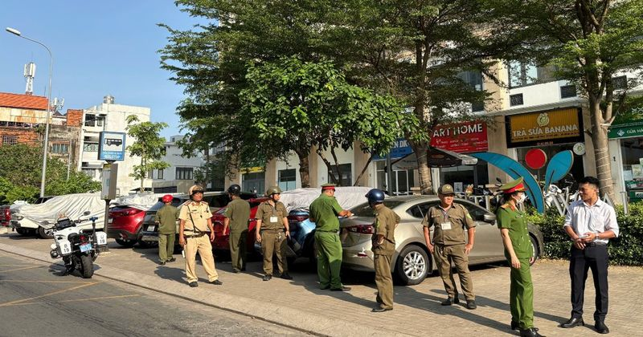
Ô tô đỗ trên vỉa hè ở TP.HCM bị ghi hình phạt nguội, nhiều xe bị cẩu 🔗 MOI
Những ngày qua, nhiều tuyến đường trên địa bàn phường Tăng Nhơn Phú (TP.HCM) trở nên thông thoáng hơn khi lực lượng chức năng đồng loạt ra quân xử lý tình trạng lấn chiếm vỉa hè, dừng đỗ xe trái phép
Chàng trai Nghệ An chăm bà nội U90 ở bệnh viện khiến nhiều người xúc động 🔗 MOI
Khoảnh khắc cảm động Câu chuyện chàng trai 23 tuổi kiên nhẫn chăm sóc bà nội U90 tại một bệnh viện ở Nghệ An được chia sẻ bởi Hoàng Trang (SN 1991, quê Nghệ An). Trên một hội nhóm, câu chuyện thu hút
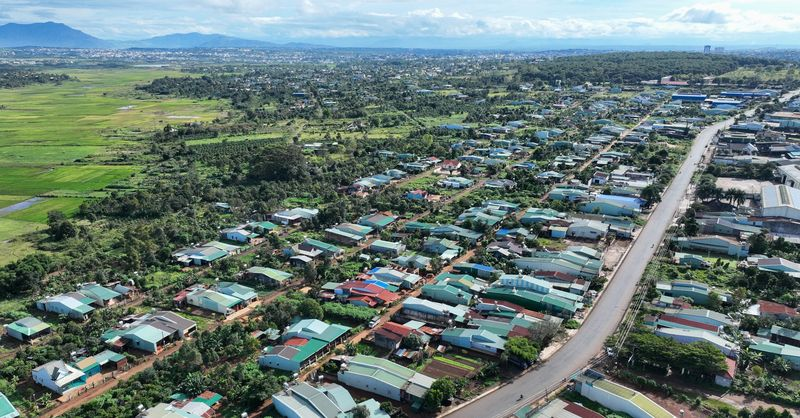
Cầm 200 triệu tiền cọc nhưng né công chứng, 2 phụ nữ ở Gia Lai bị phạt gấp đôi 🔗 MOI
Nhận tiền cọc rồi khất lần công chứng Theo trình bày của bà D. (ngụ tỉnh Gia Lai) tại tòa, vào tháng 7/2024, bà đã chuyển khoản 200 triệu đồng để đặt cọc mua một thửa đất diện tích 82,5m2 tại Gia Lai
Khoảnh khắc FPV Ukraine tấn công thủy phi cơ bên trong căn cứ Nga 🔗 MOI
Video: Robert Brovdi/Militarnyi Thiếu tá Robert “Madyar” Brovdi, chỉ huy Lực lượng Hệ thống không người lái của Ukraine cho biết cuộc tấn công lúc rạng sáng 15/5 nhằm vào căn cứ quân sự ở ngoại vi thà
Đóng nút giao Bưng Môn vào cao tốc Biên Hòa - Vũng Tàu 🔗 MOI
Ngày 16/5, Cục Cảnh sát giao thông (CSGT) - Bộ Công an có văn bản gửi Sở Xây dựng và Ban Quản lý dự án (QLDA) đầu tư xây dựng TP. Đồng Nai, góp ý phương án tổ chức giao thông để đưa dự án thành phần 1
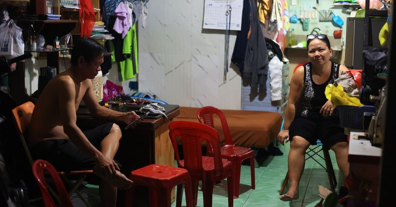
'Luật ngầm' chủ trọ thu tiền điện 4.000 đồng/kWh: Khổ vì một kiểu 'nóng' khác 🔗 MOI
Theo Nghị định 133 của Chính phủ, người cho thuê nhà thu tiền điện cao hơn mức quy định đối với điện sinh hoạt có thể bị phạt từ 20 - 30 triệu đồng, có hiệu lực từ ngày 25.5 tới. Hiện giá điện sinh ho
Báo Trung Quốc tiếc vì U.17 Việt Nam bị loại, e dè khi đội nhà đấu Úc ở bán kết 🔗 MOI
Sau trận đấu vào rạng sáng 17.5, trang 163 Sports dành khá nhiều dòng để nói về hành trình của U.17 Việt Nam . Tờ báo Trung Quốc đánh giá đội bóng của HLV Cristiano Roland là một trong những bất ngờ l
VinFast ra mắt xe mới cuối tháng 5, dễ là VF 8 đời mới 🔗 MOI
Hình ảnh úp mở ra mắt xe mới của VinFast - Ảnh: VinFast Trang fanpage chính thức của VinFast mới đây đã thu hút sự chú ý lớn từ cộng đồng yêu xe, khi đăng tải hình ảnh úp mở về một mẫu ô tô mới, kèm t

Ngành vận tải biển quý 1/2026: Hầu hết tăng trưởng, Vinaship lãi đột biến nhờ bán tàu 🔗 MOI
Quý 1/2026, nhiều doanh nghiệp vận tải biển ghi nhận tăng trưởng cả về doanh thu và lợi nhuận, đặc biệt Vinaship dù doanh thu giảm nhưng vẫn báo lãi đột biến nhờ khoản thu nhập từ thanh lý tàu.

Huy động nguồn lực cho tăng trưởng xanh 🔗 MOI
Pháp luật Bài viết phân tích tiềm năng, thực trạng và định hướng phát triển các mô hình du lịch biển tại Việt Nam nhằm hướng tới một nền kinh tế biển xanh, bền vững. Với đường bờ biển dài hơn 3.260 km
Vận tải Xếp dỡ Hải An muốn phát hành gần 1.900 tỷ đồng trái phiếu 🔗 MOI
CTCP Vận tải và Xếp dỡ Hải An dự kiến phát hành tối đa 18,8 triệu trái phiếu kèm chứng quyền, huy động 1.883 tỷ đồng phục vụ đầu tư tàu container, cảng biển và cảng cạn (ICD). Ảnh minh họa: HAH. Theo
BH Media, Lululola, Giọng ca để đời... hoạt động ra sao trước khi 'dính án' bản quyền? 🔗 MOI
Vừa qua, Cơ quan Cảnh sát điều tra Bộ Công an ra quyết định khởi tố 5 vụ án hình sự về tội "Xâm phạm quyền tác giả , quyền liên quan", quy định tại Điều 225 Bộ luật Hình sự. Các vụ án xảy ra tại Công
Mitsubishi Xforce đổi tên thành Outlander Sport, có trang bị khách Việt mong chờ 🔗 MOI
Theo trang Carsales, hãng xe Nhật Bản đã xác nhận Outlander Sport sẽ có mặt tại thị trường ô tô New Zealand, được nhập khẩu nguyên chiếc từ Indonesia. Tuy nhiên, không khó để nhận ra mẫu xe mới chính
Sức khỏe tim mạch: 4 lời khuyên giúp tập thể dục an toàn sau tuổi 40 🔗 MOI
Tập thể dục thường xuyên giúp cải thiện tuần hoàn máu, kiểm soát cholesterol và giảm nguy cơ đột quỵ , theo trang thông tin sức khỏe Everyday Health (Mỹ). Người tập thể dục nên kết hợp các bài sức bền
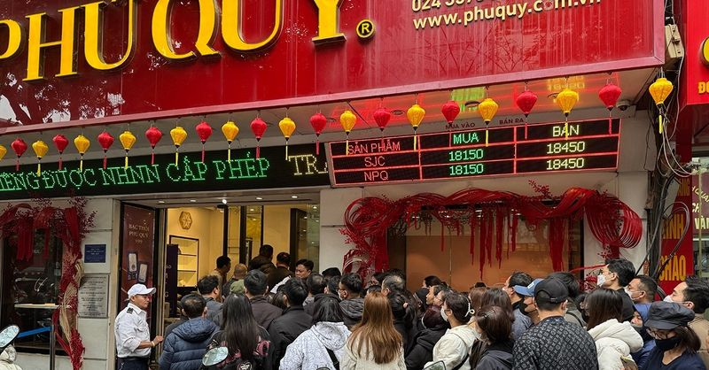
Ôm hơn 1,3 tỷ đổ vào mua bạc lúc đỉnh giá, lỗ gần 200 triệu chưa dám bán 🔗 MOI
Giá bạc giảm mạnh sau giai đoạn tăng nóng đầu năm khiến không ít nhà đầu tư thua lỗ, có người mất tới hàng trăm triệu đồng. Thị trường bạc trong nước gần đây sôi động hơn khi giá phục hồi trở lại, nhà
Diện mạo cao tốc Chí Thạnh - Vân Phong trước ngày thông xe toàn tuyến 🔗 MOI
Cao tốc Chí Thạnh - Vân Phong dài 48 km, vốn đầu tư 11.000 tỷ đồng, thuộc trục Bắc - Nam qua địa bàn Phú Yên cũ (nay là Đăk Lăk). Dự án khởi công đầu năm 2023, chậm tiến độ do ảnh hưởng mưa lũ, trong
Gieo mây ngăn cháy rừng 🔗 MOI
Chính quyền bang British Columbia vừa cấp khoản tài trợ một triệu CAD (khoảng 730.000 USD) cho Skyward Wildfire - công ty có trụ sở tại thành phố Vancouver - nhằm thử nghiệm công nghệ gieo mây trong m
Nữ doanh nhân ngồi giữa Tim Cook và Elon Musk tại quốc yến: Từ nữ công nhân đến "bà trùm" nắm giữ yết hầu chuỗi cung ứng Apple, Tesla; sở hữu 1 nhà máy quan trọng tại Việt Nam 🔗 MOI
TIN MỚI Vị trí trực diện tại bàn tiệc trung tâm của sự kiện ngoại giao kinh tế ở Bắc Kinh cho thấy tầm ảnh hưởng của Lens Technology trong bản đồ công nghiệp phụ trợ công nghệ cao thế giới. Hiện tại,
Đại học Quốc gia TP.HCM: Không chỉ bài báo, phải có sản phẩm ra thị trường 🔗 MOI
Đại học Quốc gia TP.HCM vinh danh các cá nhân nhà khoa học đã có những đóng góp cho sự phát triển khoa học công nghệ và đổi mới sáng tạo - Ảnh: THIỆN THÔNG Ngày 16-5, Đại học Quốc gia TP.HCM tổ chức h

Xoắn dây tinh và thời gian vàng cấp cứu 🔗 MOI

Bộ Tài chính đồng hành cùng doanh nghiệp nhỏ và vừa trên hành trình chuyển đổi kép 🔗 MOI
Chuyển đổi số Trong bối cảnh tiêu chuẩn ESG, yêu cầu Net Zero và sức ép cạnh tranh toàn cầu ngày càng gia tăng, phần lớn doanh nghiệp Việt Nam, đặc biệt là doanh nghiệp nhỏ và vừa đang đối mặt với kho
Tìm thấy thi thể bé gái cách hiện trường chìm ghe khoảng 3km 🔗 MOI
Thi thể bé gái Đ. được tìm thấy cách nơi xảy ra tai nạn khoảng 3km - Ảnh: THANH HUYỀN Vị trí phát hiện thi thể bé gái cách hiện trường khoảng 3km về hướng xã Sông Đốc, thuộc địa bàn xã Lương Thế Trân,
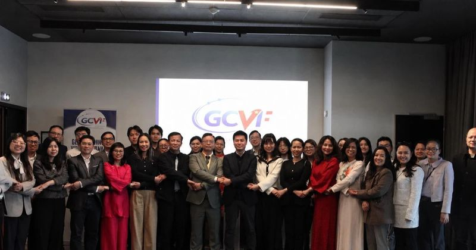
Ra mắt Hiệp hội Kết nối Toàn cầu Việt Pháp GCVF 🔗 MOI
Facebook Twitter Lưu bài viết Bản in Copy link Theo phóng viên TTXVN tại Paris, chiều 16/5 (giờ địa phương), Hiệp hội Kết nối Toàn cầu Việt Pháp (Global Connect Vietnam France - GCVF) đã chính thức ra
Khởi tố vụ án nhóm người đi trên xe Lexus đánh 2 cô gái trên phố Hoàng Cầu 🔗 MOI
(PLO)- Liên quan đến vụ hai cô gái tố bị nhóm người hành hung rồi lên xe Lexus, công an đã ra quyết định khởi tố vụ án hình sự gây rối trật tự công cộng. Ngày 16-5, Cơ quan CSĐT Công an TP Hà Nội đã k

'Bản đồ bệnh lý' tuổi 40 và nghịch cảnh trẻ uống trà, già tập thể dục 🔗 MOI
Tuổi 40 mắc đủ bệnh người già Anh T.V.T (sinh năm 1985, giám đốc doanh nghiệp nhập khẩu vật tư y tế tại Hà Nội) bất ngờ với kết quả trong một lần khám tổng quát mới đây khi “bản đồ bệnh lý” dày đặc hi
PC1 thông báo Chủ tịch Trịnh Văn Tuấn và Tổng giám đốc Vũ Ánh Dương bị khởi tố 🔗 MOI
Công ty CP Tập đoàn PC1 (PC1) vừa công bố thông tin bất thường về việc Cơ quan Cảnh sát điều tra Bộ Công an đã khởi tố, bắt tạm giam nhiều lãnh đạo và nhân sự chủ chốt của doanh nghiệp để điều tra các
Thủ khoa học lập trình muộn, vào 'Big Tech' ở tuổi 23 🔗 MOI
Minh tốt nghiệp thủ khoa Học viện Công nghệ Bưu chính Viễn thông (PTIT) sau 4,5 năm với điểm tổng kết 3.85/4. Chừng một tuần nữa mới nhận bằng kỹ sư loại xuất sắc, nhưng Minh đã có gần nửa năm làm việ
Lỗi không chỉ ở con trẻ 🔗 MOI
Cả hai leo lên ghế rồi chạy vòng quanh cười đùa ầm ĩ khiến một người đàn ông lớn tuổi phải đứng dậy đổi chỗ. Nhiều hành khách ngồi gần đó chỉ biết tặc lưỡi, khó chịu. Điều khiến tôi ngạc nhiên hơn cả
Xác định 2 cặp đấu bán kết U17 châu Á 2026 🔗 MOI
Bốn trận tứ kết VCK U17 châu Á 2026 đã chính thức khép lại, qua đó xác định hai cặp bán kết đầy hấp dẫn gồm U17 Nhật Bản gặp U17 Trung Quốc và U17 Uzbekistan chạm trán U17 Australia. Tâm điểm chú ý củ
Những đóa sen bất khuất 🔗 MOI
Triển lãm được tổ chức ngay tại vùng đất từng là “địa ngục trần gian”, như một lời tri ân sâu sắc dành cho những người phụ nữ kiên định và bao dung đã đi qua khói lửa chiến tranh. Triển lãm gồm ba nội
Quốc gia hạnh phúc nhất thế giới 🔗 MOI
Nếu hạnh phúc là một môn thi đấu Olympic thì các nước Bắc Âu sẽ chiếm trọn bộ huy chương. Phần Lan đứng đầu năm thứ chín liên tiếp, Iceland đứng hạng hai còn Đan Mạch xếp thứ ba. Bắc Âu - vùng đất hạn
Tương lai Barca là Hansi Flick 🔗 MOI
Hansi Flick sẽ tiếp tục huấn luyện Barcelona đến năm 2028, cùng điều khoản gia hạn thêm một năm. Đây là món quà sau khi vô địch La Liga 2025-2026, với trận “El Clasico” thắng Real Madrid 2-0. Ông quyế
Trải nghiệm quý cho lứa trẻ 🔗 MOI
Sự kiện diễn ra từ ngày 11 đến 15/5, quy tụ 12 đội bóng gồm: LPBank HAGL, Jubilo Iwata (Nhật Bản), Trường Tươi Đồng Nai, Eum Seong (Hàn Quốc), Sông Lam Nghệ An, Gangwon FC (Hàn Quốc), Kham Say (Lào),
AI giúp người khiếm thị kết nối dễ dàng hơn 🔗 MOI
Ứng dụng nhắn tin Zalo cho hay đưa AI vào ứng dụng, giúp người dùng tiếp cận AI một cách đơn giản và tự nhiên nhất trong đó có các tính năng hữu ích cho người lớn tuổi, người gặp khó khăn về thính lực
Báo Tuổi Trẻ tập huấn truyền thông cho cán bộ, nhân viên hệ thống iSchool, UKA 🔗 MOI
Nhà báo Trần Tiến Dũng hướng dẫn học viên thực hành tại lớp tập huấn - Ảnh: DUYÊN PHAN Báo Tuổi Trẻ tập huấn 2 chuyên đề theo yêu cầu gồm kỹ năng chụp ảnh cùng kỹ năng căn bản quay và dựng c
Tổng Bí thư, Chủ tịch nước: Đại học Quốc gia Hà Nội phải trở thành 'túi khôn' để Nhà nước tìm đến 🔗 MOI
Tổng Bí thư, Chủ tịch nước Tô Lâm - Ảnh: TTXVN Ngày 16-5, Tổng Bí thư, Chủ tịch nước Tô Lâm dự lễ kỷ niệm 120 năm Ngày truyền thống Đại học Quốc gia Hà Nội (16-5-1906 - 16-5-2026) và trao tặng Huân ch
Nữ sinh TP.HCM chia sẻ giấc mơ áo lính tại lễ trưởng thành 🔗 MOI
Trần Ngọc Tuyết Vân, học sinh lớp 12C2 Trường TH-THCS-THPT Tân Phú (thứ hai từ phải sang) và các bạn tại lễ trưởng thành - Ảnh: NHƯ HÙNG Sáng 16-5, Trường TH-THCS-THPT Tân Phú, phường Tân Phú, TP.HCM
Perfect Crown vướng nghi vấn xuyên tạc lịch sử trước tập cuối 🔗 MOI
Perfect Crown được đánh giá là một trong những K-drama đáng xem nhất nửa đầu 2026 - Ảnh: MBC Theo Chosun, Perfect Crown, bộ phim truyền hình do IU và Byun Woo Sseok đóng chính, sẽ phát sóng tập cuối v
Trần Anh Hùng, Phan Đăng Di, Phan Gia Nhật Linh, Đặng Thái Huyền đến với các nhà làm phim trẻ 🔗 MOI
Diễn viên Kaity Nguyễn tại Tiệc phim ngắn Nha Trang 2026 - Ảnh: BTC Tiệc phim ngắn Nha Trang 2026 chính thức trở lại với quy mô, nội dung chuyên môn sâu sắc và mới mẻ hơn. Sân chơi cho các nhà làm phi
Chiêu úp mở đợi viral của Sơn Tùng M-TP còn gây chú ý? 🔗 MOI
Sơn Tùng M-TP đã có một màn "sắm tuồng" hết sức cầu kỳ cho sản phẩm sắp ra mắt Come my way - Ảnh: AI ghép từ FBNV Trước khi poster chính thức xuất hiện tối 15-5, Sơn Tùng M-TP đã trải qua khoảng hai t
Ký ức thời 'sổ gạo' 🔗 MOI
Nhà sưu tập Huỳnh Minh Hiệp bên tờ báo Xuân Tuổi Trẻ đầu tiên, phát hành năm 1976 Năm 2026 đánh dấu tròn 40 năm Việt Nam chính thức xóa bỏ cơ chế bao cấp, bước vào thời kỳ đổi mới. Những hiện vật, hìn
Tạ Quốc Kỳ Nam 'bám váy mẹ' để đối diện chính mình 🔗 MOI
Tạ Quốc Kỳ Nam (thứ hai từ phải qua) cùng ba mẹ và bà Tư hàng xóm được anh kể trong sách Bám váy mẹ - Ảnh: HOÀNG LÊ Trong buổi giao lưu sách Bám váy mẹ diễn ra tại Đường sách TP.HCM ngày 16-5, Kỳ Nam
Viết nên hạnh phúc từ những vụn vỡ 🔗 MOI
Hạnh phúc khi được đồng hành cùng nhau mọi điều trong cuộc sống - Ảnh minh họa: QUANG ĐỊNH Hôn nhân thứ hai không phải lúc nào cũng là một cái kết đẹp hơn. Có người tìm thấy bình yên sau dông bão. Như
Thanh Hóa cam kết giữ ổn định việc làm, nâng chất lượng sống cho công nhân 🔗 MOI
Đông đảo công nhân lao động tham gia buổi đối thoại với lãnh đạo tỉnh Thanh Hóa - Ảnh: CTV Phát biểu khai mạc, ông Lương Trọng Thành - Tỉnh ủy viên, Phó chủ tịch Ủy ban Mặt trận Tổ quốc tỉnh, Chủ tịch

Hiểu đúng thí điểm vùng phát thải thấp từ 1-7: Không cấm hết xe máy xăng như lời đồn 🔗 MOI
Chi tiết khu vực dự kiến thí điểm vùng phát thải thấp tại Hà Nội từ ngày 1-7-2026 - Ảnh: VTV Từ ngày 1-7, Hà Nội bắt đầu triển khai thí điểm vùng phát thải thấp (Low Emission Zone - LEZ) tại 9 phường
Dự án Đa Phước 181ha bất ngờ có chuyển biến mới sau nhiều năm đình trệ 🔗 MOI
Siêu dự án lấn biển Đa Phước 181ha - Ảnh: ĐOÀN CƯỜNG Sở Nông nghiệp và Môi trường Đà Nẵng đang mời đơn vị tham gia gói thầu tư vấn xác định giá đất khu đô thị Đa Phước 181ha nhằm xác định nghĩa vụ tài
Bình luận viên Quang Huy làm Phó chủ tịch Liên đoàn Bóng ném Việt Nam 🔗 MOI
Bình luận viên Vũ Quang Huy (hàng đầu, thứ hai từ phải qua) cùng các thành viên Ban Chấp hành Liên đoàn Bóng ném Việt Nam nhiệm kỳ III - Ảnh: MINH CHIẾN Ngày 16-5 tại Hà Nội, Liên đoàn Bóng ném Việt N
Hé lộ hình ảnh Doraemon du lịch Việt Nam, đội nón lá và mặc áo dài 🔗 MOI
Người hâm mộ sắp có cơ hội xem tập phim xoay quanh chuyến du lịch Việt Nam của Nobita, Doraemon, Dorami và Shizuka - Ảnh: TV-Asahi Doraemon Movie 45: Nobita và lâu đài dưới đáy biển hiện đang gây sốt
Nhận được 400 triệu đồng, người phụ nữ báo công an trả lại người chuyển tiền nhầm 🔗 MOI
Công an phường Phù Vân cùng Ngân hàng OCB hướng dẫn chị Tâm (đứng giữa) bàn giao lại số tiền chuyển nhầm - Ảnh: N.V. Ngày 16-5, Công an phường Phù Vân (tỉnh Ninh Bình) cho biết vừa hỗ trợ, giúp đỡ ngư

quản lý ngân sách hiệu quả, phục vụ chính quyền địa phương 2 cấp 🔗 MOI
Tài chính Không chỉ tinh gọn, sắp xếp bộ máy và kịp thời tham mưu, ban hành, triển khai các văn bản hướng dẫn về kế toán phục vụ mô hình chính quyền địa phương 2 cấp, tham gia các đoàn công tác cùng B
Ê kíp Perfect Crown xin lỗi về tranh cãi xuyên tạc lịch sử 🔗 MOI
Màn kết hợp ăn ý của Byeon Woo Seok và IU nhận nhiều lời khen ngợi - Ảnh: MBC Theo báo Chosun , trong tập phát sóng ngày 15-5 của bộ phim Perfect Crown do Byeon Woo Seok và IU đóng chính, mối quan hệ
Người Đà Nẵng rước Thần Nông, làm lễ trước đá thần nhân lễ hội mục đồng làng Phong Lệ 🔗 MOI
Chiều 16-5, đông đảo người dân làng cổ Phong Lệ (phường Hòa Xuân, TP Đà Nẵng) đổ ra cánh đồng, theo đoàn rước Thần Nông đến làm lễ trước đá thần để cầu cho mưa thuận gió hòa, mùa màng bội thu - Ảnh: T
Thua Hải Phòng, Becamex TP.HCM bị báo động đỏ 🔗 MOI
Becamex TP.HCM (áo xanh) thua Hải Phòng ở thời điểm quan trọng - Ảnh: VPF Tối 16-5, Becamex TP.HCM thi đấu với CLB Hải Phòng trên sân Lạch Tray. Hải Phòng gần như hết mục tiêu và đã rút ông Chu Đình N
Cô gái kể lại thời điểm bị nhóm nam nữ đi Lexus hành hung trên phố 🔗 MOI
Hình ảnh nhóm người hành hung 2 cô gái trẻ - Ảnh cắt từ clip Liên quan vụ việc nhóm người đi xe Lexus bị tố chửi bới, hành hung hai cô gái trên đường phố Hà Nội, Công an phường Đống Đa (Hà Nội) đã mời
Lịch trực tiếp Giải bóng chuyền Cúp VTV9 - Bình Điền ngày 17-5 🔗 MOI
Lịch trực tiếp Giải bóng chuyền nữ quốc tế Cúp VTV9 - Bình Điền 2026 ngày 17-5 theo thông báo của ban tổ chức - Đồ họa: AN BÌNH Ngày thi đấu thứ 3 của Cúp VTV9 - Bình Điền 2026 sẽ chứng kiến một trong
Khởi tố vụ án nhóm người đi Lexus hành hung 2 cô gái trên phố Hoàng Cầu 🔗 MOI
Công an phường Đống Đa yêu cầu những người liên quan đến vụ việc về trụ sở để làm rõ - Ảnh: Công an cung cấp Liên quan đến vụ việc nhóm nam nữ đi xe Lexus bị tố chửi bới, hành hung hai cô gái trên đườ
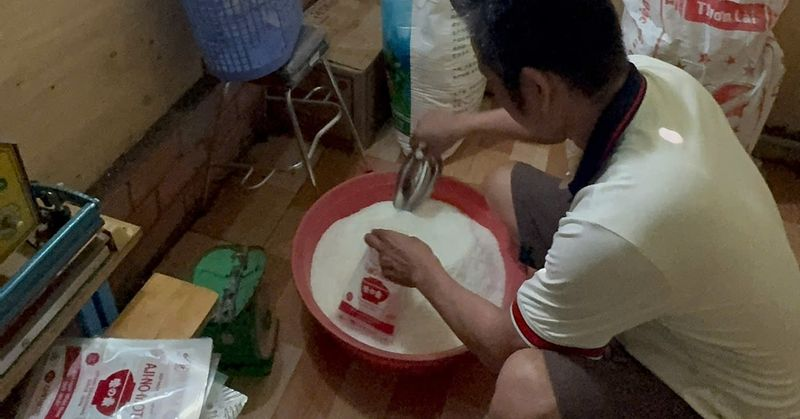
Công an TP.HCM bắt nhóm làm bột ngọt Ajinomoto giả, lên đến hàng tấn 🔗 MOI
Cơ quan điều tra thi hành lệnh bắt 2 bị can sản xuất bột ngọt Ajinomoto giả - Ảnh: Công an TP.HCM Ngày 16-5, Công an TP.HCM cho biết thực hiện cao điểm 45 ngày đêm chuyển hóa địa bàn theo chỉ đạo quyế
Bảng câu hỏi tưởng giúp dạy dỗ học sinh về lòng biết ơn, lại gây phẫn nộ dữ dội 🔗 MOI
Một trường tiểu học ở Trung Quốc gây phẫn nộ khi khảo sát học sinh bằng những câu hỏi quá chi tiết về nghề nghiệp của phụ huynh - Ảnh: JELLY TSE Báo South China Morning Post ngày 16-5 đưa tin một trườ
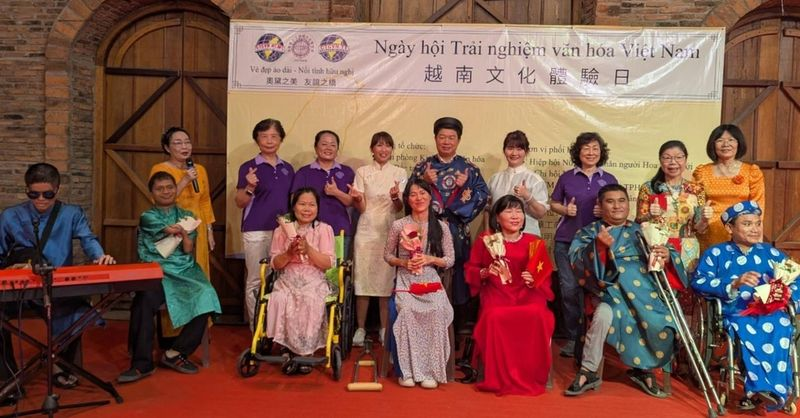
Giao lưu văn hóa Việt - Đài, lan tỏa giá trị nhân văn tại TP.HCM 🔗 MOI
Nạn nhân chất độc da cam cùng trẻ em biểu diễn tại sự kiện - Ảnh: Văn phòng Kinh tế và Văn hóa Đài Bắc Sáng 16-5, Văn phòng Kinh tế và Văn hóa Đài Bắc tại TP.HCM phối hợp cùng Bảo tàng Áo dài tổ chức
Xe buýt cháy rụi sau khi va chạm với tàu hỏa ở Bangkok, 8 người thiệt mạng 🔗 MOI
Xe buýt bốc cháy sau vụ va chạm với tàu chở hàng tại Bangkok chiều 16-5 - Ảnh: KHAOSOD Theo báo Nation Thailand , một vụ tai nạn nghiêm trọng đã xảy ra lúc 15h40 chiều 16-5, khi một đoàn tàu chở hàng
Cảnh sát biển Việt Nam khảo sát biển đảo Tây Nam của Tổ quốc 🔗 MOI
Đoàn công tác tặng quà, động viên cán bộ, chiến sĩ các tàu đang thực hiện nhiệm vụ trên vùng biển phía Tây Nam - Ảnh: LIÊN NHI Từ ngày 12 đến 16-5, trong chuyến khảo sát biển đảo phía Tây Nam của Tổ q

Đổi mới công tác xây dựng và thi hành pháp luật: Dấu ấn 1 năm thực hiện Nghị quyết số 66-NQ/TW 🔗 MOI
Tài chính Trong tiến trình phát triển đất nước, cải cách thể chế luôn được xác định là khâu đột phá để khơi thông nguồn lực và nâng cao năng lực cạnh tranh quốc gia. Trên nền tảng những chuyển động mạ

Khu Công nghiệp, Khu Kinh tế 🔗 MOI
Theo yêu cầu của Thủ tướng, lãnh đạo Bộ, ngành, địa phương phải chỉ đạo hoàn thành việc xử lý các cơ sở nhà, đất dôi dư sau sáp nhập trước ngày 25/5, không để tình trạng hư hỏng, xuống cấp, lãng phí.
3 thói quen ăn uống gây hại cho tim nhất 🔗 MOI
Bác sĩ chuyên khoa hồi sức tích cực Hoàng Hiên (Trung Quốc) dẫn một nghiên cứu công bố năm 2026 trên tạp chí The Innovation Nutrition cho biết khoảng 5,9 triệu người trên thế giới đã tử vong trong năm
Lan tỏa giá trị 120 năm đào tạo tinh hoa cho đất nước 🔗 MOI
Hội thảo do Trường đại học Khoa học Xã hội và Nhân văn đăng cai, phối hợp cùng các đơn vị liên quan thuộc Đại học Quốc gia Hà Nội thực hiện. Điểm nhấn đặc biệt của hội thảo chính là việc sự kiện diễn
Hướng dẫn chi tiết cách làm hộ chiếu trên ứng dụng VNeID, không cần đến trực tiếp 🔗 MOI
Để sử dụng dịch vụ, người dân cần có tài khoản định danh điện tử mức độ 2 đang hoạt động và đã cài đặt ứng dụng VNeID. Toàn bộ quy trình thực hiện được hướng dẫn rõ ràng, gồm các bước sau: Bước 1 : Đă
Quyết liệt chống hàng giả, hàng nhái 🔗 MOI
Tại Công điện số 38/CĐ-TTg ngày 5-5-2026, Thủ tướng Chính phủ yêu cầu mở đợt cao điểm đấu tranh chống buôn lậu, gian lận thương mại, hàng giả và xâm phạm quyền sở hữu trí tuệ từ ngày 7 đến 30-5. Trong
Ca sĩ Miu Lê bị khởi tố, công ty quản lý khẳng định 'không bao che' 🔗 MOI
(PLO)- Sau khi ca sĩ Miu Lê bị khởi tố liên quan đến ma túy, công ty quản lý ca sĩ Miu Lê cho biết không bao che cho bất kỳ hành vi vi phạm pháp luật nào; đồng thời sẽ đại diện làm việc với các đối tá
Tôm, cua khổng lồ ‘bay’ rợp quảng trường trung tâm Cà Mau 🔗 MOI
Clip: Những con diều "khổng lồ" tung bay giữa quảng trường trung tâm ở Cà Mau. Chiều 16/5, Tỉnh Đoàn Cà Mau khai mạc Tuần lễ thả diều nghệ thuật năm 2026, tại Quảng trường Phan Ngọc Hiển (phường An Xu
Lần đầu tiên tuyển Hàn Quốc có cầu thủ mang dòng máu ngoại dự World Cup 🔗 MOI
Chính xác hơn, Jens Castrop là cầu thủ lai. Anh sinh ra tại Đức, có bố là người Đức và mẹ là người Hàn Quốc. Castrop đang khoác áo CLB Monchengladbach.
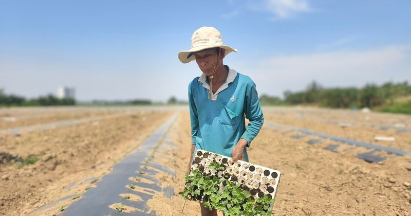
Nửa năm bám bãi bồi, nửa năm ngược Tây Nguyên theo những mùa dưa hấu 🔗 MOI
(PLO)- Sau khoảng 60 ngày canh tác ở bãi bồi trên sông Trà Khúc, những người nông dân gốc Quảng Ngãi lại ngược lên vùng đất Tây Nguyên trồng vụ dưa mới. Cứ hết mùa ở đồng bằng, nhiều nông dân Quảng Ng
Nhạc trưởng Lê Phi Phi và điều chưa từng kể về nhạc sĩ Hoàng Vân và người vợ Tây 🔗 MOI
LỜI TÒA SOẠN: Trong mỗi dàn nhạc giao hưởng, nhạc trưởng là người dẫn đường và kết nối các nhạc công. Công việc của nhạc trưởng đòi hỏi sự kiên nhẫn, khổ luyện, trách nhiệm cũng như khát vọng lớn tron
Semenyo lập siêu phẩm, Man City đăng quang FA Cup 🔗 MOI
Trận chung kết FA Cup đêm 16-5 tại sân Wembley giữa Man City và Chelsea diễn ra căng thẳng không ngoài dự đoán khi cả hai đội đều nhập cuộc thận trọng. Man City là đội kiểm soát bóng vượt trội hơn tro
Ba tháng phản kháng tuyệt vọng của cô gái yêu lầm kẻ bạo lực 🔗 MOI
Rạng sáng 14/10/2024, tại một tòa chung cư cao tầng ở Nam Ninh, tỉnh Quảng Tây, Hà Đình Đình, 21 tuổi, bị chém nhiều nhát, hôn mê bất tỉnh. Em gái song sinh của cô, Hà Mẫn Mẫn, bị lôi đi và rơi từ tần
Cú sốc sau tờ kết quả HIV dương tính 🔗 MOI
Chàng trai làm nghề kinh doanh online, thuộc nhóm nam quan hệ tình dục đồng giới, vốn hiểu rõ nguy cơ và luôn kiểm tra sức khỏe định kỳ. Nhưng khi bước vào mối quan hệ mới, anh nới lỏng phòng ngừa vì
Thuyết 'hẹn hò taxi': Đàn ông chỉ cưới người đúng thời điểm 🔗 MOI
Thuyết này bắt nguồn từ nhân vật Miranda trong phim "Sex and the City" đầu những năm 2000. Cô ví đàn ông như những chiếc taxi. Khi sẵn sàng lập gia đình, họ sẽ "bật đèn" và kết hôn với người phụ nữ tì
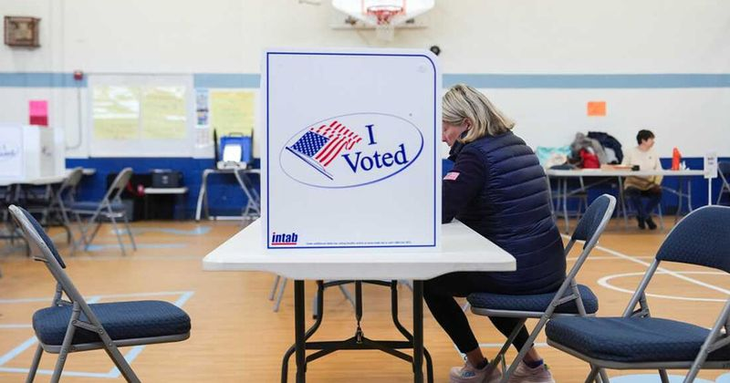
Đảng Dân chủ gặp bất lợi trong cuộc đua vẽ bản đồ bầu cử 🔗 MOI
Cụ thể, các thẩm phán đã từ chối khôi phục lại bản đồ phân chia khu vực bầu cử mới của Virginia. Quyết định trên đồng nghĩa với việc nỗ lực vẽ lại bản đồ nhằm giành lợi thế của đảng Dân chủ tại Virgin
Hàng giả với chiêu trò lẩn tránh truy quét 🔗 MOI
Truy quét trên toàn quốc Ngay từ khi nhận được chỉ đạo hỏa tốc của Thủ tướng Chính phủ, lực lượng quản lý thị trường (QLTT) và các cơ quan chức năng trên cả nước đã nhanh chóng bắt tay vào chiến dịch
'Nóng' du lịch hè 🔗 MOI
Tour nội địa ngắn ngày lên ngôi Từ đầu tháng 5, chị Nguyễn Thị Minh Anh (38 tuổi, ở TP.HCM) đã chốt xong tour gia đình 4 ngày 3 đêm đi Đà Nẵng vào đầu tháng 6 để "săn" pháo hoa quốc tế. Ban đầu, gia đ
Hàng chục cánh diều khổng lồ hình tôm cua phủ kín bầu trời Cà Mau 🔗 MOI
Chiều tối 16.5, Tỉnh Đoàn Cà Mau khai mạc Tuần lễ thả diều nghệ thuật năm 2026 tại Quảng trường Phan Ngọc Hiển, phường An Xuyên, tạo nên không gian rực rỡ sắc màu ngay trung tâm tỉnh. Hoạt động diễn r
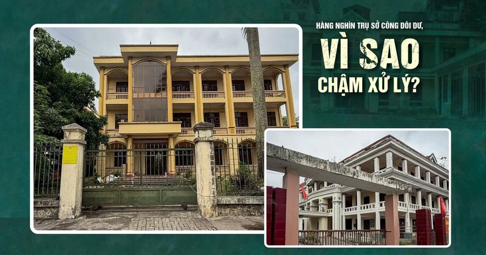
Tài sản công dôi dư 'không nên chỉ nằm trong hồ sơ nội bộ' 🔗 MOI
Tóm tắt tiêu điểm -Bối cảnh và áp lực thời gian: + Quốc hội khóa XVI giám sát chuyên đề nhằm tránh lãng phí, xử lý tồn tại. +Hiện còn hơn 6.000 cơ sở nhà, đất dôi dư cần xử lý bước 2 . + Người đứng đầ
Bộ Công an đề xuất bổ sung nhiều lỗi vi phạm giao thông 🔗 MOI
X E GHÉP VÀO TẦM NGẮM Tại dự thảo, Bộ Công an đề xuất phạt tiền từ 12 - 14 triệu đồng đối với người điều khiển ô tô không kinh doanh vận tải hành khách (KDVTHK) nhưng chở người có thu tiền hoặc ký hợp
Nhà vườn 10.000m2 như resort ở ngoại ô của NSND Phạm Phương Thảo, NSƯT Việt Hoàn 🔗 MOI
Không chỉ được yêu mến bởi giọng hát đậm chất dân gian, trữ tình, NSND Phạm Phương Thảo và NSƯT Việt Hoàn còn khiến công chúng ngưỡng mộ bởi cuộc sống bình yên giữa thiên nhiên. Sau những chuyến lưu d
3.500 tỷ đồng làm cầu Cổ Chiên 2 🔗 MOI
UBND tỉnh Vĩnh Long vừa quyết định phê duyệt Dự án xây dựng cầu Cổ Chiên 2, bắc qua sông Cổ Chiên, kết nối các xã An Qui và Long Hòa (nối tỉnh Bến Tre và tỉnh Trà Vinh cũ). Dự án do Ban Quản lý dự án
Bác sĩ tiết lộ yếu tố quyết định giá trị dinh dưỡng của trái cây 🔗 MOI
Bác sĩ chuyên khoa 2 Châu Thị Anh, phụ trách Khoa Dinh dưỡng, Bệnh viện đa khoa Xuyên Á TP.HCM, cho biết g iá trị dinh dưỡng của trái cây phụ thuộc nhiều yếu tố như độ tươi, mùa vụ, giống cây, cách bả
Cô gái nằm gục trên vỉa hè sau vụ ẩu đả ở phố Huế 🔗 MOI
Ngày 16-5, chỉ huy Công an phường Hai Bà Trưng (Hà Nội) cho biết đã xác minh, làm rõ nhóm thanh niên xô xát ở phố Huế, xảy ra vào tối 15-5. Một người nằm gục ở vỉa hè sau hỗn chiến. Ảnh cắt từ clip Tr
Chùa cổ hơn 200 năm ở TP.HCM: Vua Thành Thái ban sắc, gắn đại gia 'nhì Phương' 🔗 MOI
Giữa lòng TP.HCM sôi động, có một chùa cổ hơn 2 thế kỷ từng được vua ban sắc; đồng thời liên quan với gia đình ông Đỗ Hữu Phương, người giàu thứ 2 Sài Gòn xưa mà dân gian thường có câu: Nhất Sỹ, nhì P
Ăn sáng quá muộn ảnh hưởng cân nặng thế nào? 🔗 MOI
Cơ thể người vận hành theo đồng hồ sinh học 24 giờ, giúp điều chỉnh hoóc môn, cảm giác đói và quá trình trao đổi chất. Buổi sáng thường là thời điểm cơ thể xử lý đường hiệu quả hơn vì độ nhạy insulin
WHO cảnh báo 'khủng hoảng thiếu vận động' ở giới trẻ Việt Nam 🔗 MOI
Ngày 16/5, tại hội thảo tổng kết Sáng kiến Hợp tác Thể thao vì Sức khỏe Cộng đồng , Tổ chức Y tế Thế giới (WHO) cùng các chuyên gia y tế, giáo dục đã cảnh báo về "khủng hoảng thiếu vận động" ở giới tr
Nhà ga sân bay Long Thành sắp về đích nhưng chỉ có 3.000 người thi công 🔗 MOI
Sân bay Long Thành (phường Long Thành, TP Đồng Nai) là công trình trọng điểm quốc gia khởi công vào năm 2021. Trong đó, gói thầu 5.10 - nhà ga hành khách được ví như “trái tim” của sân bay, đồng thời
Cú hích 260.000 tỷ đồng cho loạt siêu dự án vượt biển, đường sắt tại TPHCM 🔗 MOI
Kế thừa động lực từ 10 công trình biểu tượng khởi công đầu năm, TPHCM đang dồn lực kích hoạt loạt dự án trọng điểm hướng tới cột mốc 2/7, chào mừng 50 năm Thành phố mang tên Bác. Với tổng vốn hơn 260.
Lịch âm hôm nay: Người Việt chính thức đón tháng 4 có ngày đặc biệt 🔗 MOI
Dương lịch hôm nay là chủ nhật, đánh dấu năm 2026 trải qua ngày thứ 136. Theo lịch âm hôm nay 17.5 là ngày 1 tháng 4, theo cách gọi can chi là ngày Tân Mão, tháng Quý Tỵ, năm Bính Ngọ. Như vậy, người
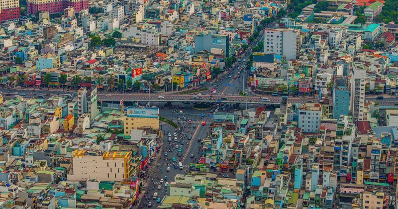
Toàn cảnh trục Hàng Xanh - Bình Triệu sắp 'lột xác': Gỡ điểm nghẽn kẹt xe TP.HCM 🔗 MOI
TP.HCM vừa giao liên danh gồm Công ty cổ phần đầu tư hạ tầng kỹ thuật TP.HCM, Công ty đối tác công tư CII và Công ty cổ phần xây dựng hạ tầng IMIC nghiên cứu, lập hồ sơ đề xuất dự án chỉnh trang trục
Nga tiến quân ở Kharkiv, bác cáo buộc muốn tấn công NATO 🔗 MOI
Trong chuyến thị sát tiền tuyến ở Ukraine, Tướng Valery Gerasimov, Tổng tham mưu trưởng lực lượng vũ trang Nga, còn cho biết giao tranh tiếp tục diễn ra ở vùng Velyka Shapkivka của Kharkiv, cũng như t
U17 Việt Nam ngậm ngùi chia tay vòng tứ kết châu Á 2026 🔗 MOI
U17 Việt Nam đón nhận thất bại trước Australia. ẢNH: AFC Từng thắng Australia tại U17 Đông Nam Á 2026 cùng cảm hứng từ tấm vé dự U17 World Cup 2026 đã mang đến sự thoải mái cho U17 Việt Nam khi tái đấ
Chelsea đạt thỏa thuận bổ nhiệm HLV Xabi Alonso 🔗 MOI
Alonso đã tới London từ đầu tuần trước để đàm phán và chấp nhận lời mời của Chelsea. Hai bên hiện hoàn tất mọi thủ tục, và thông báo chính thức sẽ sớm được công bố. Chelsea xem Alonso là mục tiêu số m
U17 Việt Nam dừng bước trước Úc ở giải châu Á 🔗 MOI
Ở trận tứ kết 4 của Giải U17 châu Á 2026, U17 Việt Nam nhập cuộc chủ động và tạo ra một số pha phối hợp đáng chú ý về cầu môn Úc ngay sau tiếng còi khai cuộc. Sỹ Bách, Văn Dương hay Mạnh Quân đều có c
Cô đơn ngay trong nhà mình! 🔗 MOI
Điện thoại thông minh, mạng xã hội và các nền tảng trực tuyến đang giúp cuộc sống trở nên thuận tiện hơn. Chỉ cần vài cú chạm tay, người ta có thể làm việc, mua sắm, trò chuyện, giải trí… mà không cần
Ngôi nhà chứa năng lượng sống 🔗 MOI
Một ngôi nhà không chỉ được tạo nên từ gạch, xi-măng hay những món nội thất đẹp mắt, mà còn được nuôi dưỡng bằng cảm xúc, sự quan tâm và năng lượng sống của những người bên trong. Nhiều người chăm chú
Hoàng Hải, Double2T, Dương Hoàng Yến cùng 'dàn sao' thắp sáng đêm khai mạc 'Mùa du lịch Thái Nguyên 2026' 🔗 MOI
Mới đây, chương trình khai mạc mùa du lịch Thái Nguyên năm 2026 vừa diễn ra với chủ đề Bản giao hưởng: Hồ trên núi - Trà trong mây mang đến cho khán giả đại tiệc nghệ thuật giàu cảm xúc, nơi thiên nhi
Đang diện cảnh báo, một cổ phiếu bất ngờ "tím lịm" sau tin thế chấp siêu dự án 4.300 tỷ Cần Giờ tại Sacombank 🔗 MOI
FDC&GEL: Giá hiện tại Thay đổi Xem hồ sơ doanh nghiệp TIN MỚI Trong phiên giao dịch ngày 14/05/2026, cổ phiếu FDC của Công ty Cổ phần Ngoại thương và Phát triển Đầu tư Thành phố Hồ Chí Minh (Fideco) đ
Tranh luận bỏ thi lớp 10: Giảm áp lực nhưng lo học bạ 'đẹp như tranh vẽ' 🔗 MOI
Thí sinh tham gia kỳ thi tuyển sinh vào 10 năm 2025 tại điểm thi Trường THCS Quang Trung - Ảnh: HỒ NHƯỠNG Thông tin TP.HCM dự kiến mở rộng xét tuyển, tiến tới bỏ kỳ thi lớp 10 trên Tuổi Trẻ Online thu
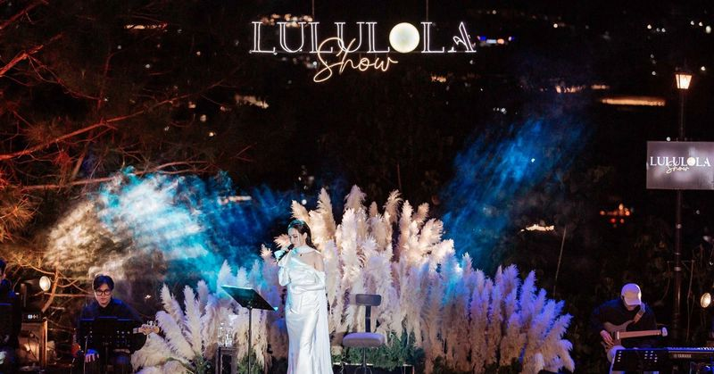
Trước khi bị khởi tố, BH Media, Mây Sài Gòn, Thông Zeo, Lululola, Giọng ca để đời hoạt động ra sao? 🔗 MOI
BH Media và Trung tâm Bảo vệ quyền tác giả âm nhạc Việt Nam từng vướng tranh chấp liên quan đến nhiều ca khúc cách mạng vào năm ngoái - Ảnh tư liệu Năm doanh nghiệp đó là BH Media, Lululola, 1900 Grou
Kịch ‘Miền Nam trong trái tim Bác’ về Pác Bó 🔗 MOI
Cảnh trong vở Chuyện nhà chị Tín - Ảnh: Nhà hát Kịch Việt Nam Đây là chương trình nghệ thuật đặc biệt kỷ niệm 136 năm Ngày sinh Chủ tịch Hồ Chí Minh và kỷ niệm 85 năm ngày Bác Hồ về nước, trực
BH Media, Lululola, 1900 Group, Mây Sài Gòn và Giọng ca để đời đã vi phạm tác quyền ra sao? 🔗 MOI
Đối tượng Nguyễn Hải Bình, đại diện pháp luật của Công ty BH Media - Ảnh chụp màn hình Đó là chủ các doanh nghiệp, trung tâm: BH Media , Lululola, 1900 Group, Mây Sài Gòn, Giọng ca để đời. Toàn những
Phạt vi phạm giao thông 🔗 MOI
Vì sao IP Business trở thành cuộc chơi lớn tiếp theo của ngành giải trí? 🔗 MOI
Thay vì phụ thuộc vào các format quốc tế hoặc vận hành theo mô hình media truyền thống, DatVietVAC lựa chọn trực tiếp sáng tạo và sở hữu IP - Ảnh: DV Tại Việt Nam, xu hướng này hình thành rõ nét, khi
Khởi tố, bắt tạm giam Chủ tịch, Tổng giám đốc Tập đoàn PC1 cùng nhiều cá nhân khác 🔗 MOI
Ông Trịnh Văn Tuấn - Chủ tịch HĐQT PC1 - Ảnh: DN Ngày 16-5, Công ty CP Tập đoàn PC1 (PC1) công bố thông tin bất thường liên quan đến việc nhận được công văn của Cơ quan cảnh sát điều tra Bộ Công an về
Cận cảnh Di tích Bến K15 huyền thoại vừa được khánh thành ở Đồ Sơn 🔗 MOI
Dự án đầu tư xây dựng, tu bổ tôn tạo tổng thể khu Di tích Bến K15 (Đồ Sơn, Hải Phòng) vừa được UBND TP Hải Phòng khánh thành, đưa vào sử dụng nhân dịp kỷ niệm 71 năm Ngày giải phóng thành phố, Lễ hộ
Tổng thống Latvia chỉ định nghị sỹ đảng đối lập làm Thủ tướng mới 🔗 MOI
Facebook Twitter Lưu bài viết Bản in Copy link Ngày 16/5, Tổng thống Latvia Edgars Rinkevics thông báo đã giao nhiệm vụ thành lập chính phủ mới cho ông Andris Kulbergs, một nghị sỹ thuộc đảng đối lập
Hôm nay diễn ra Ngày hội tuyển sinh khối các ngành Khoa học và Công nghệ lần thứ 2 🔗 MOI
Trong chương trình, các diễn giả tên tuổi như PGS.TS Trần Đình Phong - Phó Hiệu trưởng Trường Đại học Khoa học và Công nghệ Hà Nội (USTH) - Giải thưởng Tạ Quang Bửu năm 2018; Tiến sĩ Phạm Huy Hiệu - G
Người dân hiến kế đỗ xe ở TP.HCM 🔗 MOI
Tại buổi tiếp xúc, cử tri Nguyễn Đức Thành (P.Diên Hồng) cho rằng cần quy hoạch đồng bộ giữa giao thông và phát triển đô thị , đặc biệt là câu chuyện đỗ xe khi: "Tình trạng đỗ ô tô dưới lòng đường đã
Gạo Việt xanh, phát thải thấp: Định vị thương hiệu quốc gia trên bản đồ nông nghiệp toàn cầu 🔗 MOI
Từ những cánh đồng ở Đồng bằng sông Cửu Long, một cuộc chuyển mình sâu sắc đang diễn ra: Chuyển từ tư duy sản lượng sang chất lượng, từ canh tác truyền thống sang nông nghiệp phát thải thấp; từ cạnh t
Hà Nội rực rỡ sắc màu phượng vĩ, hoàng yến 🔗 MOI
Những ngày giữa tháng 5, muồng hoàng yến đồng loạt bung nở vàng rực trên nhiều tuyến phố Hà Nội. Dọc các cung đường như Thanh Niên, Nguyễn Đình Thi hay Trích Sài, sắc hoa nhuộm vàng không gian ven hồ
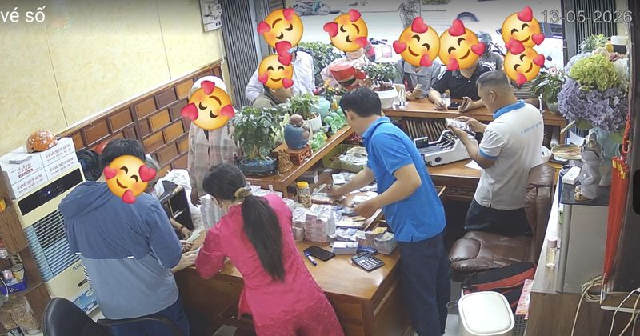
73 vé trúng hơn 3,6 tỉ đồng xổ số miền Nam: Khách vây kín đại lý đổi thưởng 🔗 MOI
Đại lý vé số Chấn Nam ở Cần Thơ (Hậu Giang cũ) thông báo đã đổi thưởng hàng loạt vé trúng an ủi và khuyến khích xổ số miền Nam tổng trị giá hơn 3,6 tỉ đồng (chưa tính thuế). Khoảnh khắc khách vây kín
Sergio Ramos giải cứu Sevilla 🔗 MOI
Sergio Ramos (trong ảnh), và tập đoàn do anh đại diện, Five Eleven Capital, đã đạt được thỏa thuận với 3 trong số các cổ đông lớn nhất của Sevilla để hoàn tất thương vụ mua lại CLB. Các chủ sở hữu của
Hai tháng phục dựng đồng phục hỏa xa năm 1946 🔗 MOI
Đầu năm nay, Tổng công ty Đường sắt Việt Nam giao Tổng công ty May Nhà Bè phục dựng đồng phục nhân viên hỏa xa theo Sắc lệnh số 109 ngày 18/6/1946 do Chủ tịch Hồ Chí Minh ban hành. Mục tiêu không chỉ
Cơ hội cho đổi thay giáo dục đại học 🔗 MOI
Trường đại học Khoa học tự nhiên (Đại học Quốc gia TP.HCM) giới thiệu các sản phẩm nghiên cứu khoa học - công nghệ - Ảnh: TRẦN HUỲNH * PGS.TS Nguyễn Tấn Trần Minh Khang (Phó hiệu trưởng phụ trách Trườ

Công cụ AI liên quan Anthropic tự ý xóa sạch dữ liệu của một doanh nghiệp trong 9 giây 🔗 MOI
Hành động phá hoại của công cụ lập trình AI đã khiến khách hàng của Công ty PocketOS rơi vào tình thế khó khăn - Ảnh TED HSU Báo Guardian đưa tin một công cụ lập trình vận hành bằng trí tuệ nhân tạo (
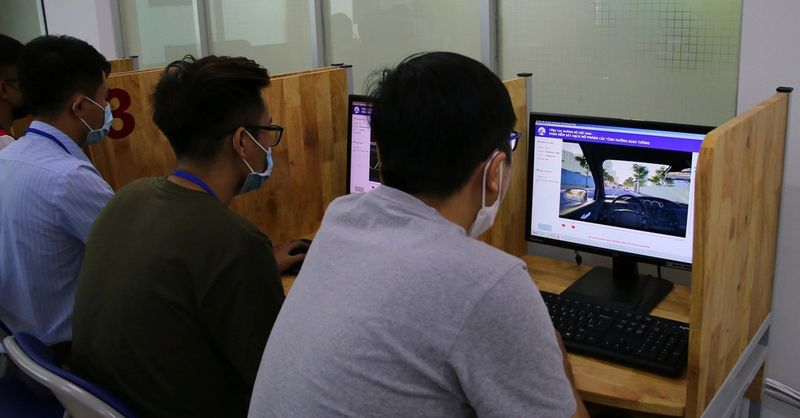
Tin tức sáng 17-5: Đề xuất tăng gấp đôi số câu hỏi kiểm tra để phục hồi điểm bằng lái xe 🔗 MOI
Thí sinh thi lấy bằng lái xe tại một trung tâm sát hạch lái xe ở TP.HCM - Ảnh: CHÂU TUẤN Đề xuất tăng gấp đôi số câu hỏi kiểm tra để phục hồi điểm bằng lái xe Bộ Công an đang lấy ý kiến về thông tư sử
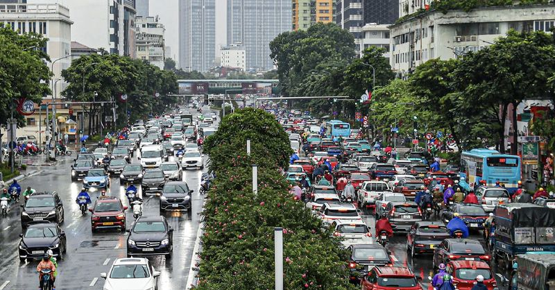
Cục CSGT: Nghiên cứu tổ chức làn đảo chiều thêm 2 tuyến đường, tương tự đường Cộng Hòa 🔗 MOI
Đường Nguyễn Chí Thanh thường xuyên ùn tắc - Ảnh: HỒNG QUANG Ngày 16-5, Cục Cảnh sát giao thông (Bộ Công an) cho biết đơn vị đang phối hợp với Cục Đường bộ Việt Nam, các đơn vị liên quan nghiên cứu, s

Báo cáo tài chính doanh nghiệp 🔗 MOI
Động lực tăng trưởng lợi nhuận của CEO chủ yếu đến từ việc cải thiện doanh thu, ngoài ra còn được đóng góp bởi lãi thoái vốn đầu tư vào công ty con.
Chân dung doanh nghiệp 🔗 MOI
ĐHĐCĐ thường niên 2026 của Sacombank ghi nhận nhiều nội dung lớn: cập nhật tiến độ tái cơ cấu, nợ xấu ở mức 5,01%, kế hoạch lợi nhuận thận trọng.
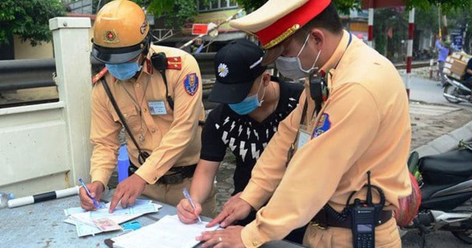
Cục CSGT nói gì về mức phạt tiền khi sửa đổi Nghị định 168? 🔗 MOI
Cục CSGT nói gì về mức phạt tiền khi sửa đổi Nghị định 168? Theo Nguyễn Hưởng | 17/05/2026 06:44 AM | Xã hội Theo dõi Cafebiz.vn trên Theo đại diện Cục CSGT, dự thảo Nghị định sửa đổi, bổ sung một số
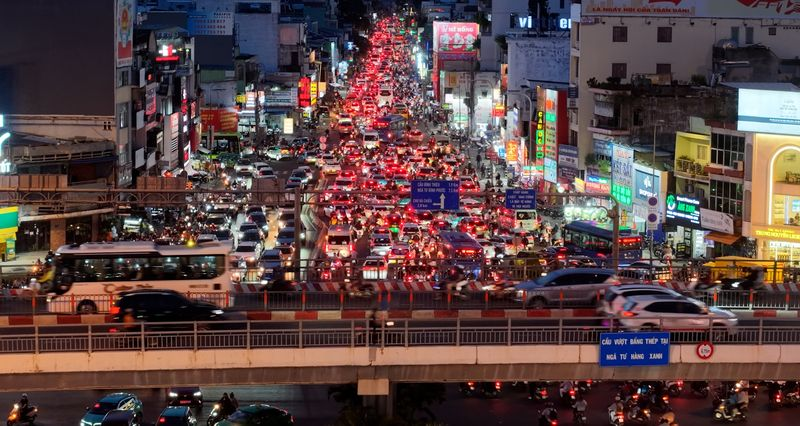
🔗 MOI
Theo ghi nhận của VietNamNet, lưu lượng phương tiện di chuyển qua nút giao Hàng Xanh luôn ở mức cao vào giờ cao điểm, tình trạng ùn tắc kéo dài thường xuyên, lực lượng chức năng phải túc trực điều tiế
Iran sắp công bố cơ chế mới cho eo biển Hormuz 🔗 MOI
Trong một bài đăng trên mạng xã hội X hôm thứ Bảy (16/5), Chủ tịch Ủy ban An ninh Quốc gia và Chính sách Đối ngoại của Quốc hội Iran Ebrahim Azizi cho biết cơ chế mới được xây dựng dựa trên chủ quyền
Lan tỏa động lực đổi mới sáng tạo trong hệ thống giáo dục đại học Việt Nam 🔗 MOI
Tại Lễ kỷ niệm 120 năm Ngày truyền thống Đại học Đông Dương - tiền thân của Đại học Quốc gia Hà Nội vào ngày 16/5 vừa qua, Tổng Bí thư , Chủ tịch nước Tô Lâm đã có bài phát biểu, trong đó đề nghị Đại
Thắng nghẹt thở U17 Hàn Quốc, U17 Uzbekistan lấy vé bán kết 🔗 MOI
Được đánh giá ngang sức cân tài, U17 Hàn Quốc và U17 Uzbekistan đã cống hiến 90 phút mãn nhãn, với 4 bàn thắng chia đều cho hai đội. Phải phân định thắng thua trên loạt luân lưu, thủ môn dự bị Mehrojb
Ronaldo phung phí cơ hội khi Al Nassr thua chung kết Cup C2 châu Á 🔗 MOI
*Ghi bàn: Hummet 30' Năm lần dứt điểm nhưng không ghi bàn, cùng hai cơ hội tốt bị bỏ lỡ, Ronaldo trải qua trận đấu đáng quên trước CLB Nhật Bản. Theo thống kê Fotmob , anh chỉ được chấm 5,9 điểm, thấp
Link xem trực tiếp bóng đá U17 Việt Nam vs U17 Australia, 00h00 ngày 17/5 🔗 MOI
Highlights U17 Việt Nam 0-3 U17 Australia Xem độc quyền Giải vô địch U17 Châu Á, từ 5/5 đến 23/5 trên TV360 tại https://tv360.vn Thông tin trận đấu U17 Việt Nam vs U17 Australia Thời gian: 00h00 ngày
Lấp khoảng trống dưỡng lão 🔗 MOI
Trong bối cảnh già hóa dân số đang diễn ra nhanh chóng, việc xây dựng một mô hình dưỡng lão phù hợp với điều kiện kinh tế - xã hội Việt Nam không chỉ là nhu cầu cấp thiết mà còn là một trong những trụ
Việt Nam thua đậm Australia ở tứ kết U17 châu Á 🔗 MOI
* Ghi bàn: O’Carroll 40’, Hassarati 60’, Gerald 75'. U17 Việt Nam bước vào sân phụ thuộc King Abdullah Sports City với đội hình xuất phát tương tự 6 trận chính thức trước đó. Australia thì thay 8 vị t
Tinh khiết mùa sen “ngự” 🔗 MOI
Hồ Tịnh Tâm là một đoạn của sông Kim Long được cải tạo có tên là ao Ký Tế dọc theo con đường Đinh Tiên Hoàng, cắt ngang là đường Lê Văn Hưu, nay thuộc phường Phú Xuân, TP Huế. Năm 1822, vua Minh Mạng
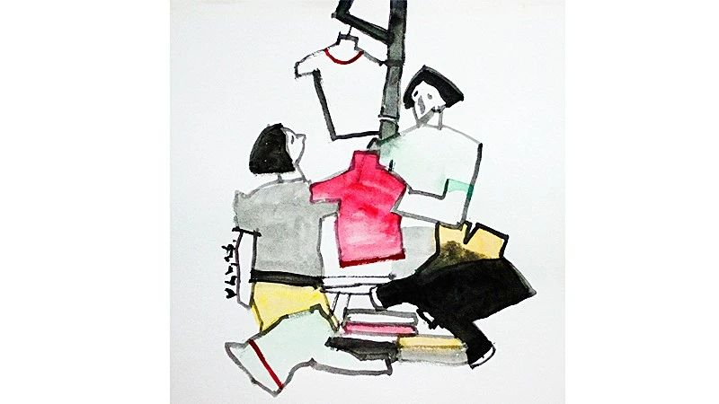
Những màu áo cũ 🔗 MOI
Vậy nên chuyện sắm một vài chiếc áo mới đôi khi lại quá tầm tay với người nghèo. Vậy là tận dụng nhà ở mặt bằng đường chính, dưới tán cây vú sữa to đùng của hàng xóm, Hân làm cái sạp để ai cho quần áo
Vững lời nguyện giúp bạn là giúp mình 🔗 MOI
Dặm dài nghĩa tình Thượng Lào Cứ mỗi dịp Bunpimay - Tết cổ truyền trong văn hóa Lào, Trung tá Nguyễn Cao Phong lại được Đại sứ quán Lào tại Việt Nam mời đến tham dự nghi lễ Sou khoẳn. Trong không khí
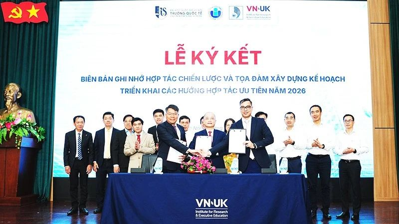
Mô hình “Một Việt Nam - ba điểm đến học thuật” 🔗 MOI
Theo nội dung ký kết, ba bên sẽ phối hợp triển khai các hoạt động trọng tâm như trao đổi sinh viên, giảng viên và nhà khoa học; nghiên cứu công nhận tín chỉ; phát triển học phần chung, chương trình ng
Bài kiểm tra giữa nhiệm kỳ 🔗 MOI
Hai chính đảng lớn nhất “xứ sở kim chi” là đảng Dân chủ (DP) cầm quyền và đảng Quyền lực quốc dân (PPP) đối lập đã sớm khởi động cuộc đua. Cuộc bầu cử được đánh giá là bài kiểm tra giữa nhiệm kỳ quan
“Lá chắn” của phụ nữ Brazil 🔗 MOI
Trong một võ đường nằm ở khu ổ chuột Rocinha, thành phố Rio de Janeiro, tiếng va chạm chân tay đều đặn vang lên mỗi cuối tuần. Trên thảm tập, huấn luyện viên Muay Thai Ana, chị Paula Lima, đang hướng
U.17 Hàn Quốc rất tốt nhưng U.17 Uzbekistan... rất tiếc: Đàn em Son Heung-min thua cay đắng, không vào bán kết 🔗 MOI
U.17 Hàn Quốc mắc sai lầm Dù đoạt vé đến World Cup, nhưng màn thể hiện ở vòng bảng châu Á của U.17 Hàn Quốc bị đánh giá là kém thuyết phục. Đội bóng xứ kim chi bị U.17 UAE và U.17 Yemen cầm hòa (xen g
TP.HCM phát thông báo khẩn về lô thuốc nhỏ mắt bị thu hồi 🔗 MOI
Thuốc nhỏ mắt Natri clorid 0,9% của Công ty Pharmedic - Ảnh: L.T.KIỀU Ngày 16-5, Sở Y tế TP.HCM phát thông báo về việc thu hồi trên toàn quốc lô thuốc dung dịch nhỏ mắt Natri clorid 0,9% do không đạt
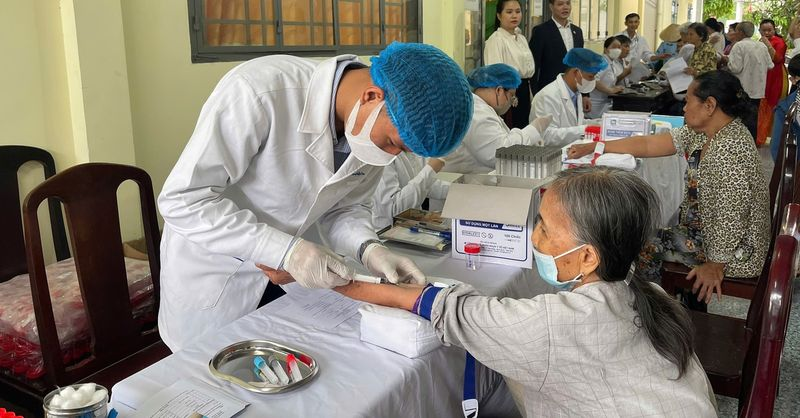
Cần Thơ tổ chức 4 điểm khám sức khỏe, sàng lọc bệnh miễn phí 🔗 MOI
Lãnh đạo thành phố và lãnh đạo Sở Y tế thành phố Cần Thơ tham dự chương trình khám sức khỏe miễn phí tại điểm xã Nhơn Ái - Ảnh: T. LŨY Theo Sở Y tế TP Cần Thơ, trong đợt 1, chương trình khám sức khỏe
Trường chuyên cần một 'chuẩn quốc tế' rộng hơn SAT 🔗 MOI
Học sinh trong một kỳ thi học sinh giỏi - Ảnh: NHƯ HÙNG Trường THPT chuyên (gọi tắt là trường chuyên ) được tổ chức nhằm phát hiện, bồi dưỡng học sinh có năng khiếu để tạo nguồn đào tạo nhân tài cho đ
Netflix xác nhận tổ chức World tour cho K-pop Demon Hunters 🔗 MOI
K-pop Demon Hunters chính thức có tour diễn đầu tiên - Ảnh: Netflix Theo The Hollywood Reporter , Netflix xác nhận sẽ phối hợp cùng AEG Presents để tổ chức tour concert toàn cầu dành cho K-pop Demon H
Kép trẻ Trọng Nhân thi Tài năng diễn viên cải lương toàn quốc 2026 🔗 MOI
Trọng Nhân tranh tài cùng các thí sinh với tiết mục Diễn kịch một mình - Ảnh: LINH ĐOAN Trọng Nhân đi thi với danh nghĩa của đơn vị Đoàn cải lương tuồng cổ Huỳnh Long. Trọng Nhân dự thi tiết mục Diễn
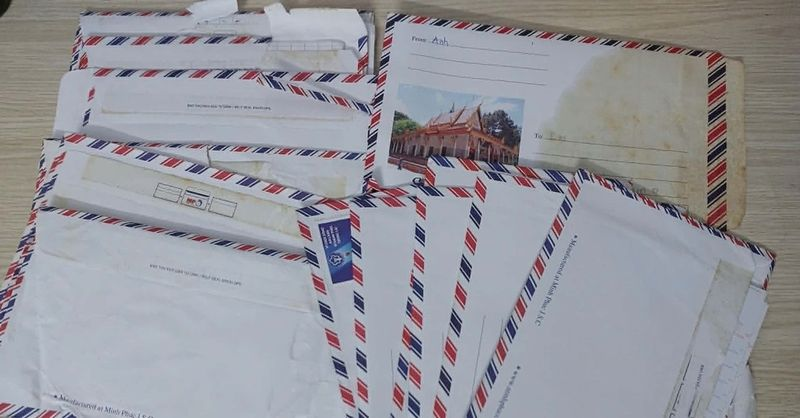
Những lá thư tay 🔗 MOI
Những lá thư tình của người đang yêu - Ảnh: THY QUỲNH Năm lớp 8, lần đầu tôi đọc những bức thư trong một cuốn sách mang tên Những lá thư tình của người đang yêu. Bây giờ tôi không còn nhớ rõ những câu
Từ quê hương Bác Hồ, tuổi trẻ cả nước tiếp lửa hành trình yêu nước 🔗 MOI
Anh Nguyễn Tường Lâm - Bí thư Trung ương Đoàn, Chủ tịch Trung ương Hội Liên hiệp thanh niên Việt Nam - thăm, tặng quà cho ngư dân phường Cửa Lò, Nghệ An - Ảnh: DOÃN HÒA Sáng 16-5 tại Nghệ An, Trung ươ
Các bạn trẻ 'ướm thử' ngày hạnh phúc tại triển lãm cưới ở Nha Trang 🔗 MOI
Các cô dâu "nhí" trình diễn thời trang các mẫu váy cưới - Ảnh: TRẦN HOÀI Triển lãm cưới mang tên Beyond Happiness by Sheraton diễn ra ngày 16-5 tại khách sạn Sheraton Nha Trang (Khánh Hòa), với sự tha
Thái Lan xếp vi rút Hanta vào nhóm bệnh nguy hiểm, cách ly người tiếp xúc 42 ngày 🔗 MOI
Nhân viên y tế khử khuẩn cho các hành khách từ tàu MV Hondiu ngay trên đường băng tại sân bay Tenerife South trước khi lên chuyến bay tới Madrid, Tây Ban Nha, hôm 10-5 - Ảnh: REUTERS Báo Khaosod đưa t
Tham quan, học tập tại Không gian văn hóa Hồ Chí Minh ở Đường sách Thành phố Thủ Đức 🔗 MOI
Một góc trưng bày tại Đường sách Thành phố Thủ Đức tiến tới kỷ niệm ngày sinh nhật Bác - Ảnh: Đường sách Thành phố Thủ Đức Những hoạt động ý nghĩa này được Đường sách TP.HCM phối hợp cùng nhiều cơ qua

Coi chừng nhiễm liên cầu lợn vì thói quen ăn tiết canh, thịt tái 🔗 MOI

Làm thế nào để lên thực đơn dinh dưỡng cho gia đình nhiều thế hệ? 🔗 MOI

Khám tiền hôn nhân ở nam và nữ khác nhau như thế nào? 🔗 MOI

Sử dụng thuốc tăng cường sinh lý để kéo dài 'cuộc yêu', có nên không? 🔗 MOI

Chồng không tinh trùng nhưng vợ vẫn sinh được con 'chính chủ', vì sao? 🔗 MOI

Viêm da tiết bã ở trẻ em khác gì ở người lớn? 🔗 MOI

Xóa xăm có xóa được triệt để hay không? 🔗 MOI

6 dấu hiệu thầm lặng cảnh báo đột quỵ trước 1 tháng 🔗 MOI
Theo The Times of India, 6 dấu hiệu của cơ thể cảnh báo trước 1 tháng khi đột quỵ sắp xảy ra: 1. Chóng mặt bất thường Cảm giác chóng mặt thường được cho là do bỏ bữa, mất nước hoặc đứng dậy quá nhanh.
AFC có động thái 'ưu ái' U17 Việt Nam trước trận tứ kết 🔗 MOI
U17 Việt Nam được kỳ vọng sẽ tiến xa ở Giải U17 châu Á 2026 - Ảnh: AFC Trên fanpage chính thức AFC Asian Cup, cơ quan đầu não bóng đá châu Á đăng tải lời chúc đặc biệt dành cho các cầu thủ Việt Nam tr
Xác minh clip 2 nhóm hỗn chiến trên đường phố, một cô gái bị đánh gục 🔗 MOI
Bên trong một cơ sở của đường dây làm hơn 4 tấn bột ngọt Ajinomoto giả tại TP.HCM 🔗 MOI
Xác minh clip nghi phun thuốc diệt lục bình trên kênh gây ô nhiễm 🔗 MOI
Những sự cố trên sân Cao Lãnh trận Đồng Tháp tiếp Long An 🔗 MOI
Cầu thủ Đồng Tháp vây quanh phản ứng tổ trọng tài - Ảnh: FPT PLAY Chiều 16-5, CLB Đồng Tháp tiếp Long An trên sân Cao Lãnh . Tiếp đà sau chiến thắng đầu tiên trên sân khách ở vòng đấu trước, chủ nhà t
Trung Đông tối 16-5: Iran lập cơ chế quản lý eo biển Hormuz; Châu Âu 'xuống nước' với Iran? 🔗 MOI
Tàu thuyền ở eo biển Hormuz trong ảnh chụp từ Musandam, Oman hôm 15-5 - Ảnh: REUTERS Iran sẽ công bố cơ chế quản lý tàu thuyền ở eo biển Hormuz và thu phí Ngày 16-5, ông Ebrahim Azizi, người đứng đầu
Trao quyền cho thiếu niên để cùng xây dựng không gian mạng an toàn 🔗 MOI
Chính các em thiếu niên cũng cần được trao quyền để chia sẻ trải nghiệm, phản ánh những vấn đề mình gặp phải trên không gian mạng và tham gia xây dựng giải pháp - Ảnh: NCA Cả xã hội vào cuộc bảo vệ tr
Thêm một đội bóng chuyền nữ Việt Nam gây sốc cho đối thủ nước ngoài 🔗 MOI
LPBank Ninh Bình (phải) tạo ra bất ngờ trước Suwon - Ảnh: D.A. Chiều 16-5, LPBank Ninh Bình thi đấu với Suwon (Hàn Quốc). Đại diện Việt Nam hiện là đương kim á quân, nhưng không còn lực lượng hùng mạn

Hệ thống Bảo hiểm xã hội Việt Nam: Tăng tốc thực hiện các chỉ tiêu nhiệm vụ năm 2025 🔗 MOI
Theo Bảo hiểm xã hội (BHXH) TP. Hồ Chí Minh, mặc dù năm 2025 gặp một số khó khăn, tuy nhiên tập thể cán bộ viên chức, người lao động BHXH TP. Hồ Chí Minh quyết tâm hoàn thành vượt chỉ tiêu giao, với s
Hơn 100 tay vợt dự giải Vietnam Padel Open 2026 🔗 MOI
Nhiều nội dung thi đấu đa dạng cho các vận động viên - Ảnh: VTF Hơn 100 tay vợt có mặt ở cụm sân Vietpadel Country Club (TP.HCM) để tranh tài giải Vietnam Padel Open 2026 - Cúp Heneiken lần thứ 1 do L
Tài Lộc lập cú đúp sau khi lấy quốc tịch Việt Nam 🔗 MOI
Tài Lộc ghi bàn thứ 9 của mình cho Ninh Bình - Ảnh: XUÂN THỦY CLB Ninh Bình còn mục tiêu bảo vệ top 3 , trong khi chủ nhà Nghệ An đã tương đối an toàn trụ hạng. Dẫu vậy, các cầu thủ Sông Lam Nghệ An v
Lý do khởi tố ca sĩ Quang Lập, chủ công ty BH Media Nguyễn Hải Bình cùng một số bị can 🔗 MOI
Pha giật gót điệu nghệ đưa Man City lên ngôi vô địch FA Cup 🔗 MOI
Haaland (giữa) kiến tạo cho Semenyo ghi bàn - Ảnh: AP Trận chung kết trên sân Wembley diễn ra quá nghẹt thở, kịch tính và cực kỳ chặt chẽ. Chelsea và Man City đã "bóp nghẹt" không gian chơi bóng của n
Alonso sẽ là huấn luyện viên chính thức thứ 6 của Chelsea 🔗 MOI
Xabi Alonso nhiều khả năng sẽ được công bố là HLV của Chelsea trong 24 giờ tới - Ảnh: Shutterstock Theo báo chí Anh, các cuộc đàm phán giữa HLV Xabi Alonso với ban lãnh đạo Chelsea đã được đẩy nhanh t
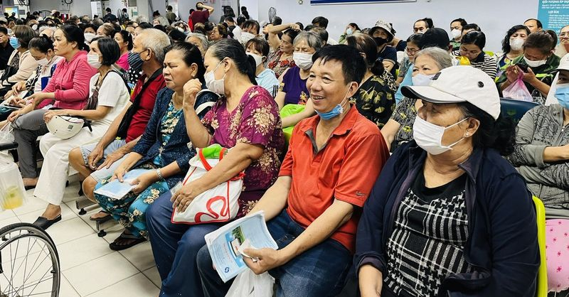
Những chính sách hỗ trợ mức đóng BHYT nào đang áp dụng tại TP.HCM? 🔗 MOI
Người bệnh BHYT đang chờ khám tại Bệnh viện Nhân dân Gia Định - Ảnh: THÙY DƯƠNG Cụ thể, Sở Y tế TP.HCM đề xuất kiến nghị đối với Bộ Y tế, Bộ Tài chính (Bảo hiểm xã hội Việt Nam) xem xét, nghiên cứu đề
Ronaldo ngậm ngùi nhìn Chủ tịch VFF trao Cúp cho Gamba Osaka 🔗 MOI
Ronaldo lại gây thất vọng trong trận đấu với Gamba Osaka ở trận chung kết AFC Champions League Two - Ảnh: AFC Bàn thắng duy nhất của trận đấu này được ghi do công của tiền đạo Deniz Hummet ở phút 29.
HLV Roland khen U17 Việt Nam: Chỉ 10 ngày tập đã tạo nên kỳ tích, rất đáng tự hào 🔗 MOI
U17 Việt Nam không thể thắng U17 Úc trong lần gặp lại - Ảnh: VFF Rạng sáng 17-5, U17 Việt Nam thua 0-3 U17 Úc và dừng bước ở vòng tứ kết Giải U17 châu Á 2026. Không thể tiến sâu hơn, U17 Việt Nam vẫn
Thua U17 Úc ở tứ kết, U17 Việt Nam về nước trong tư thế ngẩng cao đầu 🔗 MOI
Niềm vui của U17 Úc sau chiến thắng trước U17 Việt Nam ở tứ kết - Ảnh: AFC U17 Úc là đội nhập cuộc tốt hơn so với U17 Việt Nam trong những phút đầu tiên của trận tứ kết Giải U17 châu Á 2026. Tưởng chừ
Khởi tố, tạm giam ca sĩ Miu Lê 🔗 MOI
Ca sĩ Miu Lê và các đối tượng trong vụ án - Ảnh: Công an Hải Phòng Ngày 16-5, Công an TP Hải Phòng thông tin, mở rộng kết quả điều tra vụ tổ chức sử dụng trái phép chất ma túy tại Cát Bà, Cơ quan cảnh
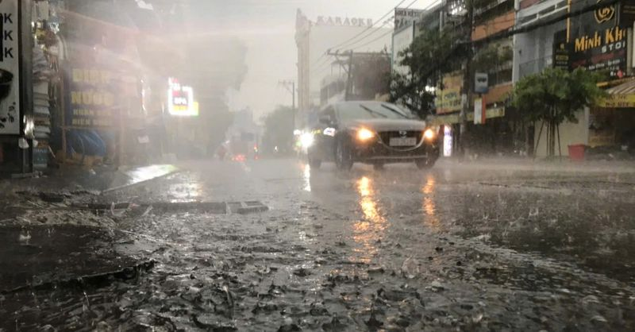
Thời tiết hôm nay 17-5: Bớt nắng nóng, mưa tăng trên cả nước 🔗 MOI
Hôm nay 17-5, thời tiết cả nước có mưa, nhất là về chiều tối - Ảnh: T.L Trung tâm Dự báo khí tượng thủy văn quốc gia cho biết hôm nay 17-5, thời tiết Tây Bắc Bộ mưa rào rải rác và dông. Đông Bắc Bộ mư
Cổ động viên Đông Nam Á: Thua Úc là bài học cần thiết cho U17 Việt Nam 🔗 MOI
U17 Việt Nam (áo đỏ) dừng bước tại tứ kết Giải U17 châu Á 2026 - Ảnh: AFC Rạng sáng 17-5, U17 Việt Nam chính thức dừng chân tại tứ kết Giải U17 châu Á 2026 sau khi phải nhận thất bại với tỉ số 0-3 trư

Nhật Bản ra mắt 'máy giặt người' trị giá 385.000 USD, làm sạch từ đầu đến chân trong 15 phút 🔗 MOI
Thống đốc Yoshimura Yoshifumi của tỉnh Osaka trải nghiệm máy giặt người Mirai - Ảnh: SISA COMMUNICATION YOUTUBE Theo trang Interesting Engineer ngày 30-11, Công ty Science Inc. của Nhật Bản vừa chính
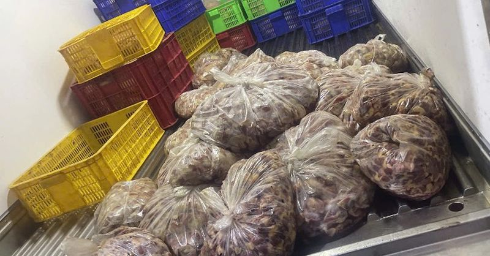
Liên tiếp chặn bắt các vụ vận chuyển thịt heo, gà bẩn vào TP.HCM tiêu thụ 🔗 MOI
Đoàn kiểm tra liên ngành theo Quyết định số 945/QĐ-UBND kiểm tra phương tiện vận chuyển sản phẩm động vật - Ảnh: CCCN-TY Ngày 16-5, thông tin từ Chi cục Chăn nuôi và Thú y TP.HCM cho biết cơ quan này
Bắt tạm giam một giáo viên ở An Giang lợi dụng tự do ngôn luận xâm phạm lợi ích tổ chức, cá nhân 🔗 MOI
Vũ Thị Hương tại cơ quan công an - Ảnh: TIẾN VĂN Theo đó, qua quá trình điều tra, Công an tỉnh An Giang xác định Vũ Thị Hương - một giáo viên ở phường Tô Châu (tỉnh An Giang) - có hành vi: dù vụ việc

Hoàn thiện khung khổ pháp lý về tiết kiệm 🔗 MOI
Pháp luật Trong công cuộc phòng, chống lãng phí hiện nay khó có thể tránh khỏi những khó khăn, nguy hiểm, ảnh hưởng tới người đấu tranh chống lãng phí. Do đó, việc bảo vệ người cung cấp thông tin phát
TP.HCM và bạn bè quốc tế khánh thành 'Vườn cây Hữu nghị' 🔗 MOI
Phó chủ tịch thường trực UBND TP.HCM Nguyễn Lộc Hà (thứ 8 từ trái sang) cùng các lãnh đạo, nguyên lãnh đạo TP.HCM và bạn bè quốc tế thực hiện nghi thức khánh thành “Vườn cây Hữu nghị” - Ảnh: L.A. Chươ
Khu chợ 'chui' quy mô khủng hoạt động thâu đêm sau nghĩa trang ở Hà Nội 🔗 MOI
Khu chợ hoạt động ở khu đất trống phía sau nghĩa trang Hà Trì thâu đêm Theo phản ánh Tuổi Trẻ Online nhận được từ người dân, vào thời điểm nửa đêm, lượng xe cộ ra vào khu vực này liên tục, hoạt động b

Cải cách tài chính công thúc đẩy tăng trưởng 🔗 MOI
Pháp luật Trong những năm qua, cùng với việc đẩy mạnh tiến trình xây dựng Nhà nước pháp quyền Việt Nam xã hội chủ nghĩa, công tác xây dựng và hoàn thiện hệ thống pháp luật đã đạt được nhiều thành tựu

CEO có quý lãi cao nhất 3 năm 🔗 MOI
Động lực tăng trưởng lợi nhuận của CEO chủ yếu đến từ việc cải thiện doanh thu, ngoài ra còn được đóng góp bởi lãi thoái vốn đầu tư vào công ty con. Trụ sở CEO Group tại Hà
U17 Việt Nam dừng bước tại Tứ kết sau trận thua Australia 🔗 MOI
U17 Việt Nam phải nói lời chia tay với Giải U17 châu Á 2026 sau trận thua với tỷ số 0-3 khi chạm trán U17 Australia ở Tứ kết. U17 Việt Nam bước vào trận Tứ kết Giải U17 châu Á 2026 gặp U17 Australia v

Chính phủ với công dân 🔗 MOI
16/05/2026 (Chinhphu.vn) - Phụ lục hợp đồng lao động có thỏa thuận bổ sung, thưởng hiệu quả công việc, căn cứ vào chỉ tiêu được giao và đánh giá KPI hằng tháng;... 16/05/2026 (Chinhphu.vn) - Sinh viên
Chủ tịch Sunshine Homes: ‘Bước lùi năm 2025 là nền móng cho chu kỳ dài hạn’ 🔗 MOI
Chủ tịch Sunshine Homes Nguyễn Xuân Anh nhìn nhận năm 2025 là một bước lùi về kết quả kinh doanh, song khẳng định việc “hy sinh ngắn hạn” là lựa chọn có chủ đích nhằm tái cấu trúc, củng cố pháp lý
bảng giá truyền thông 🔗 MOI

Thông cáo báo chí 🔗 MOI
Thông cáo báo chí 15/05/2026 (Chinhphu.vn) - Văn phòng Chính phủ vừa có Thông cáo báo chí chỉ đạo, điều hành của Chính phủ, Thủ tướng Chính phủ ngày 15/5/2026. 14/05/2026 (Chinhphu.vn) - Văn phòng Chí

Chỉ đạo, quyết định của Chính phủ - Thủ tướng Chính phủ 🔗 MOI
16/05/2026 (Chinhphu.vn) - Chính phủ ban hành Nghị định số 161/2026/NĐ-CP ngày 15/5/2026 quy định mức lương cơ sở và chế độ tiền thưởng đối với cán bộ, công... 16/05/2026 (Chinhphu.vn) - Từ ngày 01/7/
'Đại học Quốc gia Hà Nội phải trở thành trụ cột học thuật hàng đầu' 🔗 MOI
Tổng Bí thư, Chủ tịch nước Tô Lâm yêu cầu Đại học Quốc gia Hà Nội phải trở thành trụ cột học thuật của đất nước, hướng tới mục tiêu vào nhóm các đại học hàng đầu châu Á. Tổng Bí thư, Chủ tịch nước Tô
Casemiro sẽ ở lại MU thêm một năm nếu... 🔗 MOI
(PLO)- Casemiro có nhiều khả năng sẽ ở lại MU thêm một năm nữa nhưng mọi chuyện lại diễn ra không như mong đợi của tiền vệ người Brazil này. Tiền vệ Casemiro được cho là sẽ rời MU theo dạng chuyển như
Những vụ án trong tuần: Tuyên án, khởi tố, bắt tạm giam nhiều đối tượng 🔗 MOI
K hởi tố 5 vụ án về tội "Xâm phạm quyền tác giả, quyền liên quan" Ngày 16-5, Bộ Công an cho biết Cơ quan Cảnh sát điều tra Bộ Công an đã khởi tố 5 vụ án về tội "Xâm phạm quyền tác giả, quyền liên quan
Bờ kè sạt lở nghiêm trọng, dân làng phải di tản mỗi khi mưa lớn 🔗 MOI
Hoàn lưu bão số 10 năm 2025 đã gây thiệt hại nặng nề đối với xã Phong Dụ Thượng, đặc biệt là 28 hộ dân sống ven suối Ngòi Hút thuộc thôn Làng Chạng. Bờ kè phía sau các ngôi nhà này bị sạt lở nghiêm tr
2026 có thể là năm thời tiết cực đoan nhất trong lịch sử hiện đại 🔗 MOI
TIN MỚI Tổ chức nghiên cứu khí hậu World Weather Attribution (WWA) vừa đưa ra lời cảnh báo về việc hiện tượng El Nino có thể sẽ quay trở lại trong những tháng tới, biến năm 2026 trở thành một trong nh
Ronaldo lại lỗi hẹn danh hiệu, Al Nassr gục ngã ở chung kết châu Á 🔗 MOI
Cristiano Ronaldo cùng Al Nassr bước vào trận chung kết AFC Champions League Two với quyết tâm rất lớn. Sau nhiều lần lỡ hẹn ở các đấu trường quan trọng, siêu sao người Bồ Đào Nha được kỳ vọng sẽ giúp
Kiến nghị đặc biệt về khủng hoảng khí hậu 🔗 MOI
Theo tờ The Guardian, Ủy ban độc lập Toàn châu Âu về biến đổi khí hậu do Tổ chức Y tế thế giới (WHO) triệu tập đã kết luận rằng khủng hoảng khí hậu là mối đe dọa toàn cầu đối với sức khỏe. Vì vậy, hội
Israel: Đảng cảnh tả Hadash thay lãnh đạo sau hơn một thập kỷ 🔗 MOI
Facebook Twitter Lưu bài viết Bản in Copy link Theo phóng viên TTXVN tại Tel Aviv, ngày 16/5, đảng cánh tả Hadash của Israel đã bầu cựu nghị sỹ Yousef Jabareen làm chủ tịch mới, thay thế ông Ayman Ode
Dự án nâng cấp sân bay Liên Khương nguy cơ chậm tiến độ do thiếu vật liệu 🔗 MOI
Theo báo cáo của Tổng công ty Cảng hàng không Việt Nam (ACV), đến ngày 15.5, một số hạng mục sửa chữa nâng cấp đường cất hạ cánh và đường lăn sân bay Liên Khương đạt tiến độ cao. Trong đó, công tác đà
Xabi Alonso 'gật đầu' với Chelsea 🔗 MOI
Chelsea đạt thỏa thuận bổ nhiệm Xabi Alonso. Sau nhiều đồn đoán kéo dài suốt thời gian qua, Chelsea được cho là đã tiến rất gần tới việc bổ nhiệm Xabi Alonso làm HLV trưởng mới của đội bóng. Theo Fabr
Địa chỉ bí mật 95 năm trước ở Mường Qụa thành di tích quốc gia đặc biệt 🔗 MOI
Lời tòa soạn: Một đêm tháng Tư bên dòng sông Giăng, trong ngôi nhà sàn của người thanh niên dân tộc Thái - Vi Văn Khang, Chi bộ Đảng đầu tiên ở miền Tây Nghệ An được thành lập. Từ một chi bộ nhỏ ra đờ
Lương hưu và trợ cấp tăng 8% từ 1/7 🔗 MOI
Nghị định 162 được Chính phủ ban hành ngày 15/5, có hiệu lực từ 1/7, quy định 9 nhóm được điều chỉnh tăng 8%. Đó là cán bộ, công chức, công nhân, viên chức và người lao động; quân nhân, công an nhân d
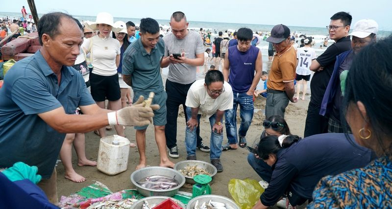
Du khách thích thú mua hải sản tươi rói ở làng chài ven biển Sầm Sơn 🔗 MOI
Không chỉ hấp dẫn bởi sự tươi ngon, giá cả hợp lý, hoạt động mua hải sản tại làng chài còn mang đến cho du khách trải nghiệm chân thực về nhịp sống miền biển. Từ sáng sớm, khu vực bến cá ở các làng ch
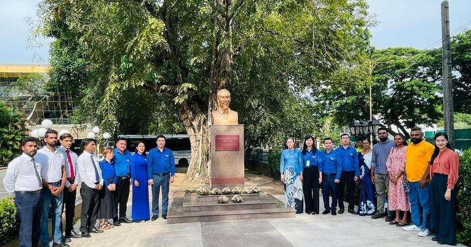
Hành trình người trẻ tìm hiểu tinh thần quốc tế của Bác 🔗 MOI
Vị lãnh tụ đầu tiên của nước ngoài được tạc tượng ở Sri Lanka Vào tháng 4.2024, đoàn đại biểu thanh niên Việt Nam đầu tiên trong lịch sử đã đến thăm và làm việc tại Sri Lanka , theo lời mời của Liên đ
Cuộc thi viết “LÒNG TỐT QUANH TA”: Lương y - cựu binh dệt niềm vui cho người nghèo 🔗 MOI
Từ một thanh niên viết thư bằng máu tình nguyện ra chiến trường vì quê hương, đến người thầy tận tụy trên bục giảng, rồi trở thành lương y chữa bệnh miễn phí cho người nghèo - cuộc đời thầy Phong Tôn
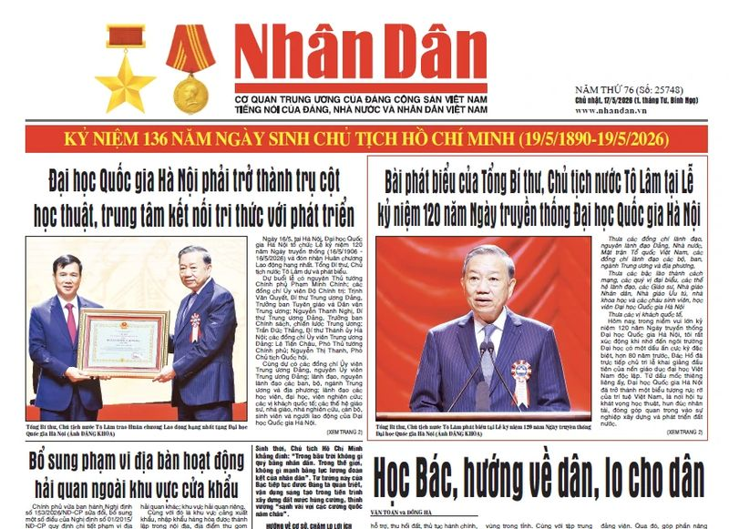
Báo Nhân Dân số 25748 🔗 MOI
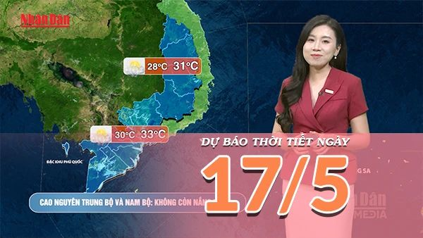
[Video] Dự báo thời tiết ngày 17/5/2026: Mưa dông quay trở lại, nắng nóng chấm dứt trên cả nước 🔗 MOI
Sáng sớm nay, nhiều khu vực tại Bắc Bộ đã xuất hiện mưa rào và dông rải rác, đánh dấu sự kết thúc của đợt nắng nóng kéo dài trong những ngày vừa qua. Theo dự báo, khu vực Đông Bắc Bộ sẽ là nơi có mưa

Tin tức đặc biệt trên báo in Thanh Niên 17.5.2026 🔗 MOI
Hành trình người trẻ tìm hiểu tinh thần quốc tế của Bác Đoàn đại biểu Việt Nam và Sri Lanka chụp ảnh lưu niệm tại tượng đài Chủ tịch Hồ Chí Minh ở thủ đô Colombo, Sri Lanka ẢNH: CTV Trong những bài họ
Báo Pháp Luật TP. Hồ Chí Minh 🔗 MOI
Tàu buồm xuất hiện, bờ kè Vĩnh Nguyên biển Nha Trang bỗng 'nổi như cồn' 🔗 MOI
Bờ kè Vĩnh Nguyên (còn gọi bờ kè làng Chụt) nằm dọc bờ biển phường Nha Trang (Khánh Hòa). Khu vực này giáp núi Cảnh Long, nơi có di tích Biệt thự Cầu Đá (lầu Bảo Đại). Bờ kè sở hữu tầm nhìn ôm trọn ba
Đại học Quốc gia Hà Nội phải vươn lên thành một đại học tinh hoa 🔗 MOI
Vào nhóm đại học hàng đầu châu Á và thế giới Tổng Bí thư, Chủ tịch nước Tô Lâm nhấn mạnh, bước vào kỷ nguyên mới, yêu cầu phát triển nhanh và bền vững của đất nước đòi hỏi Đại học (ĐH) Quốc gia Hà Nội
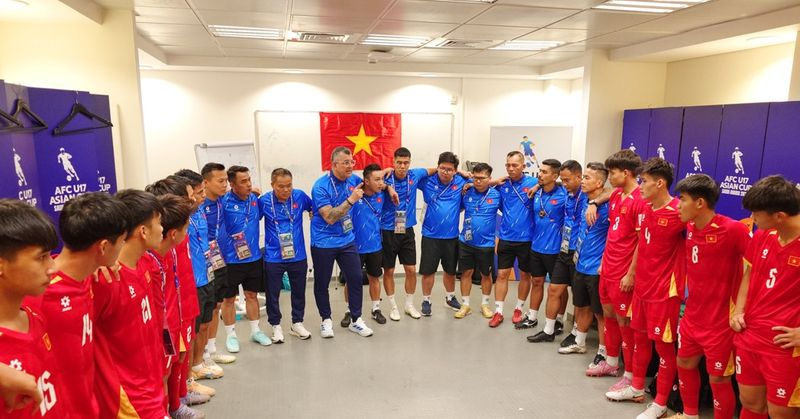
U17 Việt Nam dừng bước ở giải châu Á, HLV Cristiano Roland nói gì? 🔗 MOI
HLV Cristiano Roland cho biết, điều khiến ông tự hào nhất không chỉ nằm ở thành tích mà còn là tinh thần vượt khó và sự trưởng thành của các cầu thủ trong quãng thời gian chuẩn bị rất ngắn. “Tôi luôn
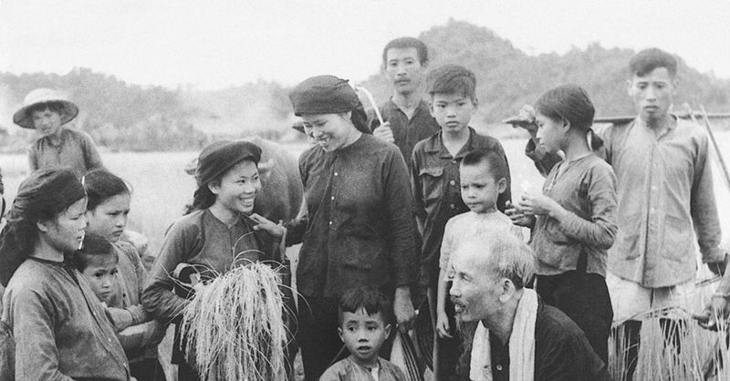
Học Bác cần 'tự soi, tự sửa' mình 🔗 MOI
Kỷ niệm ngày sinh của Chủ tịch Hồ Chí Minh nhắc nhở mỗi cán bộ, đảng viên càng phải ra sức học tập và làm theo tư tưởng, đạo đức, phong cách Hồ Chí Minh. Đó không phải là điều gì quá lớn lao, xa vời,
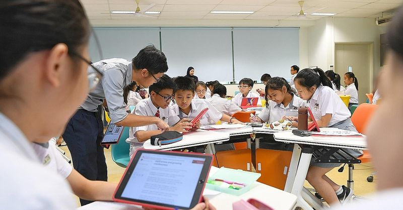
Học sinh nước Đông Nam Á nào giỏi Toán nhất thế giới? 🔗 MOI
1. Học sinh nước Đông Nam Á nào đứng đầu thế giới về Toán? Malaysia 0% Philippines 0% Singapore 0% Chính xác Theo kết quả PISA 2022 do OECD công bố cuối năm 2023 (kỳ gần nhất, đánh giá kết quả của năm

Điều cốt lõi giúp Đại học Quốc gia Hà Nội thực hiện sứ mệnh 'dẫn dắt đất nước' 🔗 MOI
Chiều 16/5, Đại học Quốc gia Hà Nội tổ chức Hội thảo khoa học quốc gia “Từ Đại học Đông Dương đến Đại học Quốc gia Hà Nội: Truyền thống 120 năm đào tạo tinh hoa”. Tại hội thảo, GS.TSKH Vũ Minh Giang,

U17 Việt Nam chia tay giải U17 châu Á 2026: Lùi một bước 🔗 MOI
Không bất ngờ Từng đánh bại U17 Australia ở bán kết giải U17 Đông Nam Á, thế nên trước giờ bóng lăn tại tứ kết U17 châu Á 2026, người hâm mộ có cơ sở hy vọng có thêm một bất ngờ từ thầy trò HLV Cristi
Kết quả bóng đá hôm nay 17/5: Nóng tứ kết U17 châu Á, Ronaldo lại vỡ mộng 🔗 MOI
Kết quả bóng đá hôm nay NGÀY GIỜ TRẬN ĐẤU TRỰC TIẾP VCK U17 CHÂU Á 2026 - VÒNG BÁN KẾT 16/05 23:00 U17 Uzbekistan 2-2 U17 Hàn Quốc (pen 5-3) TV360 17/05 00:00 U17 Việt Nam 0-3 U17 Australia CLICK ĐỂ X

Tử vi ngày 17 tháng 5: Con giáp nào may mắn hôm nay? 🔗 MOI
Tuổi Tí trong tử vi ngày 17 tháng 5 có thể muốn lên lại kế hoạch cho tháng mới âm lịch, đặc biệt là chuyện tài chính hoặc công việc cá nhân. Khi bạn viết ra điều mình cần làm, mọi thứ sẽ bớt rối hơn.
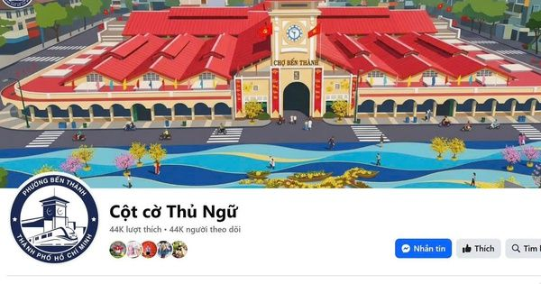
CHÍNH QUYỀN SỐ CHẠM TỚI LÒNG DÂN (*): Định hướng thông tin trên không gian mạng 🔗 MOI
Sau khi tổ chức mô hình chính quyền địa phương 2 cấp, TP HCM hiện có 168 đơn vị hành chính cấp xã; gồm 113 phường, 54 xã và 1 đặc khu. Nhằm tạo thuận tiện cho người dân sau sáp nhập, nhiều địa phương
Truyền thông Indonesia vỗ về U.17 Việt Nam: 'Hãy tự hào vì hành trình tuyệt vời' 🔗 MOI
U.17 Việt Nam vẫn rất xuất sắc Ở trận tứ kết diễn ra lúc 0 giờ ngày 17.5, U.17 Việt Nam đã có quãng thời gian nhập cuộc khá tự tin trước U.17 Úc và thậm chí có cơ hội ăn bàn rõ rệt trong hiệp 1. Tuy n
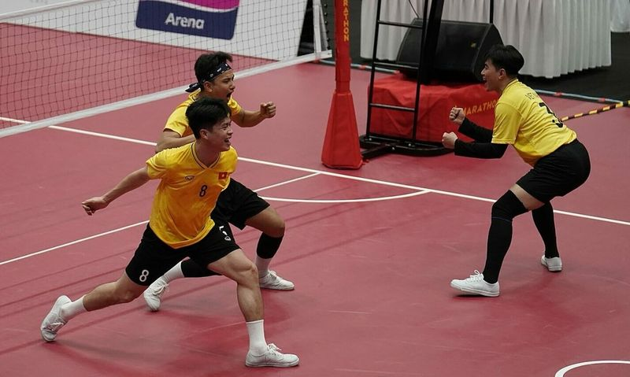
Việt Nam tiếp tục đả bại Thái Lan ở cầu mây nam 🔗 MOI
World Cup cầu mây 2026 diễn ra tại nhà thi đấu Titiwangsa, thành phố Kuala Lumpur từ 16/5 đến 23/5, chỉ bao gồm các nội dung nam, là 3 người, 4 người và đồng đội 3 người. Trong ngày thi đầu tiên 16/5,
Tranh cãi việc Chelsea bị từ chối 2 quả phạt đền trước Man City 🔗 MOI
Tình huống gây tranh cãi đầu tiên diễn ra ở phút bù giờ hiệp một. Joao Pedro ngã trong vòng cấm sau pha va chạm với Abdukodir Khusanov. Trọng tài Darren England cho trận đấu tiếp tục, trong khi tổ VAR
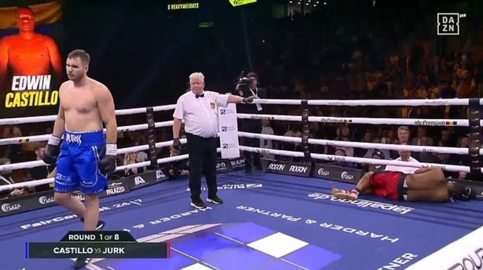
Võ sĩ quyền Anh thắng knock-out sau vài giây 🔗 MOI
Ngay sau khi trận đấu bắt đầu tại SAP Arena, Jurk tiến thẳng ra giữa võ đài và tung cú móc trái cực mạnh vào hàm đối thủ người Colombia. Đòn đánh khiến Castillo gục xuống sàn và nằm bất động trong lúc
Ronaldo bỏ lễ trao HC bạc cho Al Nassr ở Cup C2 châu Á 🔗 MOI
Sau tiếng còi mãn cuộc trên sân Al Awwal Park, Ronaldo lắc đầu rồi đi thẳng vào đường hầm, thay vì ở lại nhận huy chương cùng đồng đội. Khi các cầu thủ Gamba Osaka lần lượt bước lên bục nhận cup từ đạ

Google ra mắt Gemma 4, AI chạy offline trên thiết bị cá nhân 🔗 MOI
Gemma 4 chạy trực tiếp trên thiết bị cá nhân - Ảnh: THOMAS FULLER Trong bối cảnh trí tuệ nhân tạo vẫn phụ thuộc vào hạ tầng đám mây, việc một mô hình có thể hoạt động trực tiếp trên thiết bị cá nhân đ
Sức mua xe bán tải lao dốc 🔗 MOI
TP Hà Nội mới đây đã cho phép xe bán tải hoạt động 24/24 giờ, thay vì hạn chế theo khung giờ như trước. Tuy nhiên, điều này không đồng nghĩa các dòng xe bán tải sẽ được hoạt động như ô tô con. Chủ xe
Học Bác qua những điều giản dị (*): Những đóng góp thầm lặng 🔗 MOI
Trong một lần lưu thông trên đường, anh Võ Đặng Xuân Hòa - tài xế Grab, đoàn viên Nghiệp đoàn (NĐ) Xe ôm công nghệ Bình Tân, TP HCM - bỗng ngất xỉu, phải nghỉ việc một thời gian. Là lao động chính tro
Kane lập hat-trick Vua phá lưới Bundesliga 🔗 MOI
Trên sân Allianz hôm 16/5, Bayern áp đảo, kiểm soát bóng 69%, dứt điểm 19 lần với 7 cú trúng đích - so với 9 và 2 của Cologne. Trong đó, Kane tỏa sáng với cú hat-trick, gồm cú đúp trong 12 phút đầu và
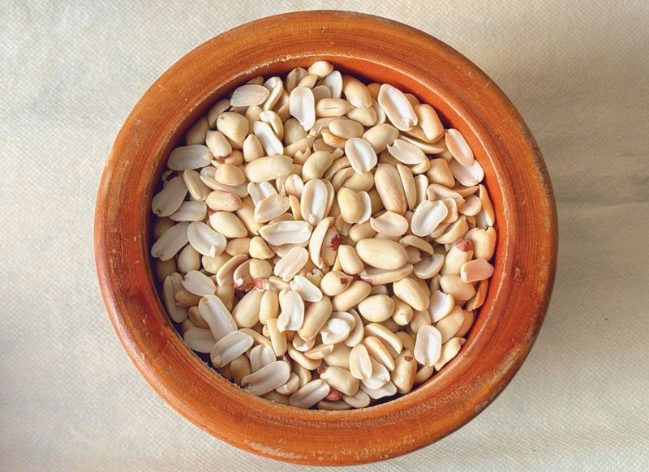
7 thực phẩm giúp ngủ sâu, ít thức giấc ban đêm 🔗 MOI
Đậu nành và các sản phẩm từ đậu nành là nguồn protein thực vật giàu tryptophan cùng nhiều khoáng chất như magie, kali, kẽm và folate. Tryptophan là axit amin cần thiết cho hoạt động của não bộ, miễn d
Một ngày của tân binh biên phòng 🔗 MOI
Giữa tháng 5, Tiểu đoàn Huấn luyện - Cơ động 1, Bộ đội Biên phòng tỉnh Quảng Trị tổ chức huấn luyện 250 tân binh. Sau hơn hai tháng nhập ngũ, các chiến sĩ trẻ dần thích nghi với môi trường quân đội. M
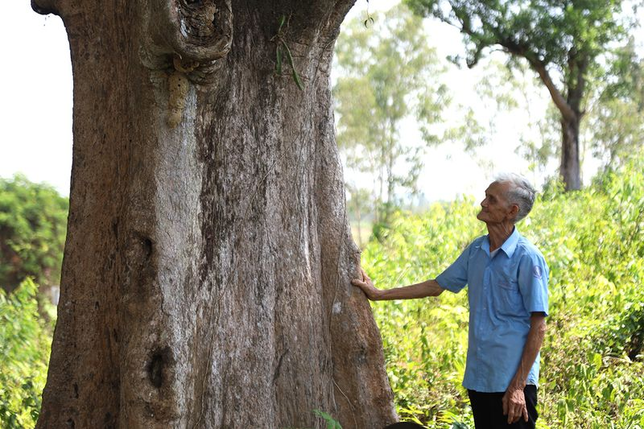
Hơn 20 cây kơ nia trăm tuổi được dân làng bảo vệ như báu vật 🔗 MOI
Quần thể kơ nia ở tổ dân phố Hòa Mỹ (xã Nhơn Phúc, thị xã An Nhơn, tỉnh Bình Định cũ) hiện còn khoảng 20 cây, phân bố quanh nhà văn hóa và khu dân cư. Trong đó, nhiều cây có tuổi đời 100-200 năm, đặc
Cuộc sống của Hồng Nhung trong penthouse 650 m2 🔗 MOI
Ca sĩ cùng hai con chuyển đến penthouse ở phường An Khánh (TP HCM) hơn một năm qua. Căn hộ hai tầng gồm phòng ăn, phòng nhạc, bếp, ba phòng ngủ, phòng để đồ. Vốn yêu thích thiên nhiên, Hồng Nhung dành

5 ngày đếm ngược đến Triển lãm VietAd 2026 - Hà Nội 🔗 MOI
Triển lãm VietAd 2026 đem đến những trải nghiệm công nghệ cho khách tham quan. - Ảnh: Ban Tổ chức Nơi hội tụ công nghệ số và kết nối toàn cầu Với xu hướng tái cấu trúc mạnh mẽ của các chuỗi cung ứng c
Đội Ronaldo thua sốc chung kết, nhìn Chủ tịch VFF trao cúp cho đại diện Nhật Bản 🔗 MOI
Kể từ khi chuyển đến Ả Rập Xê Út khoác áo Al Nassr (năm 2023), Ronaldo vẫn thể hiện phong độ cao, ghi bàn đều đặn. Dù vậy, Al Nassr lại không có thành tích tốt ở giải quốc nội cũng như châu lục khi tr
U17 Việt Nam dừng bước ở tứ kết U17 châu Á 🔗 MOI
Highlights U17 Việt Nam 0-3 U17 Australia Xem độc quyền Giải vô địch U17 Châu Á, từ 5/5 đến 23/5 trên TV360 tại https://tv360.vn U17 Việt Nam nhập cuộc tự tin trước U17 Australia nhưng nhanh chóng gặp
Video bóng đá U17 Việt Nam vs U17 Australia: Nỗ lực bất thành 🔗 MOI
Video bàn thắng U17 Việt Nam 0-3 U17 Australia Xem độc quyền Giải vô địch U17 Châu Á, từ 5/5 đến 23/5 trên TV360 tại https://tv360.vn Ghi bàn: U17 Australia: O’Carroll (41'), Hassarati 61'), Akeem Ger
Xabi Alonso đạt thỏa thuận dẫn dắt Chelsea 🔗 MOI
Nhà cầm quân người Tây Ban Nha sẽ đặt bút ký vào bản hợp đồng 4 năm với Chelsea . Thông tin trên mang đến sự khích lệ lớn cho fan The Blues, khi đội nhà vừa thua Man City ở chung kết FA Cup, khép lại
Kết quả U17 châu Á 2026 hôm nay 16/5 🔗 MOI
Kết quả U17 châu Á 2026 hôm nay NGÀY GIỜ TRẬN ĐẤU TRỰC TIẾP 16/05 23:00 U17 Uzbekistan 2-2 U17 Hàn Quốc (pen 5-3) TV360 17/05 00:00 U17 Việt Nam 0-3 U17 Australia CLICK ĐỂ XEM TRỰC TIẾP Lịch thi đấu v
Những trang sách “đời người” với Huế 🔗 MOI
1. Bộ sách vừa được ra mắt vào một ngày cuối tháng 4/2026 ngay tại di tích Cơ Mật Viện, hiện là trụ sở Trung tâm Bảo tồn di tích Cố đô Huế, nơi nhà nghiên cứu Phan Thuận An gắn bó một phần đời với côn
Sáng tác về đường sắt 🔗 MOI
Đại diện các chi nhánh của công ty và các cán bộ lão thành, công nhân tiêu biểu đã chia sẻ nhiều kỷ niệm cảm động với đoàn 15 văn nghệ sĩ gồm các nhà văn, nhà thơ, nghệ sĩ nhiếp ảnh. Đây là hoạt động
“Tôi ngưỡng mộ giá trị văn hóa của người Việt” 🔗 MOI
Thời Nay trò chuyện cùng ông nhân dịp tập thơ “Sự mê đắm của Hồ Gươm” của ông (NXB Hội Nhà văn) dày 280 trang được dịch, xuất bản và phát hành tại Việt Nam. Phóng viên (PV): Ông có thể chia sẻ sự ra đ
Nữ cán bộ đoàn năng động 🔗 MOI
Đi vào rốn lũ Cô gái Bảo Châu sinh năm 1998 là người dân tộc Tày. Mang trong mình ngọn lửa nhiệt huyết của tuổi trẻ, Châu hăng hái tham gia công tác tình nguyện, hoạt động cộng đồng như một lẽ đương n
Nguy cơ “sói đơn độc” trở lại 🔗 MOI
Viện Công tố quốc gia chống khủng bố Pháp (PNAT) cho hay, lực lượng an ninh nước này bắt giữ một công dân Tunisia 27 tuổi sống bất hợp pháp tại Pháp, trong cuộc điều tra liên quan âm mưu tấn công khủn
Virus Hanta bùng phát gây lo ngại 🔗 MOI
Kêu gọi tuân thủ khuyến nghị y tế Phát biểu ý kiến tại họp báo ở Madrid (Tây Ban Nha) ngày 12/5, Tổng Giám đốc WHO Tedros Adhanom Ghebreyesus cho biết, hiện chưa có dấu hiệu dịch virus Hanta bùng phát
5 dấu hiệu sớm cảnh báo ung thư phổi 🔗 MOI
Ung thư phổi từ lâu được xem là bệnh liên quan chặt chẽ đến thuốc lá, song nhiều trường hợp xảy ra cả ở người chưa từng hút thuốc. Ô nhiễm không khí, khói thuốc thụ động, hóa chất nơi làm việc hay yếu
Chính phủ chốt tăng lương cơ sở lên 2,53 triệu đồng từ 1/7 🔗 MOI
Ngày 15/5, Chính phủ ban hành Nghị định 161, quy định mức lương cơ sở mới và chế độ tiền thưởng với cán bộ, công chức, viên chức và lực lượng vũ trang. Mức lương cơ sở mới áp dụng với những người làm
Đừng quên chụp photobooth cùng hội bạn thân tại Ngày hội tuyển sinh khối các ngành Khoa học và Công nghệ lần thứ II 🔗 MOI
Được bố trí thành một không gian riêng biệt, khu vực chụp ảnh photobooth là một trong những điểm nhấn thú vị dành riêng cho các bạn học sinh tham gia sự kiện. Tại đây, các bạn trẻ có thể tự do sáng tạ
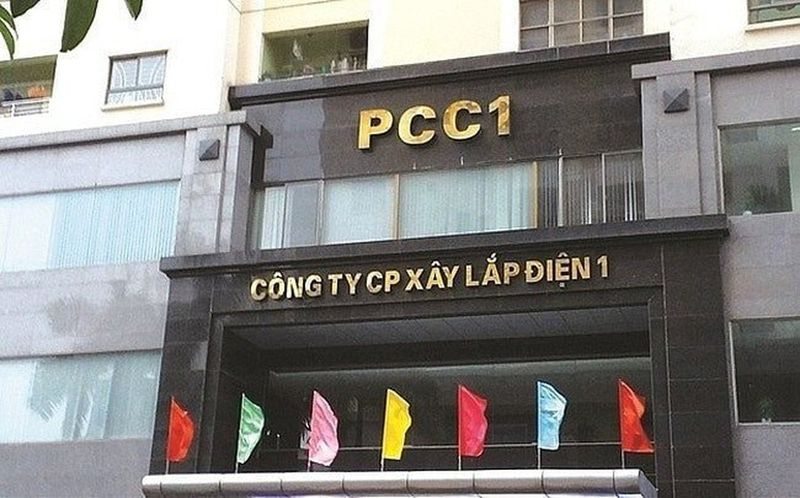
PC1 kinh doanh ra sao trước khi Chủ tịch cùng 6 lãnh đạo bị khởi tố? 🔗 MOI
PC1: Giá hiện tại Thay đổi Xem hồ sơ doanh nghiệp TIN MỚI Loạt lãnh đạo PC1 bị khởi tố Ngày 16/5/2026, Công ty Cổ phần Tập đoàn PC1 (mã CK: PC1) cho biết, Cơ quan Cảnh sát điều tra Bộ Công an đã khởi
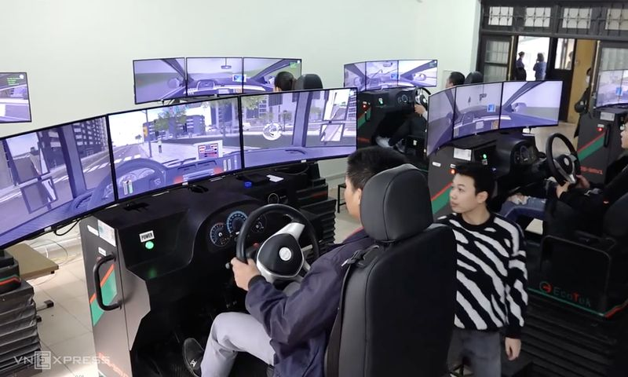
Đề xuất bỏ phần mô phỏng khi thi phục hồi bằng lái 🔗 MOI
Đây là nội dung được Cục Cảnh sát giao thông, Bộ Công an nêu tại dự thảo sửa đổi, bổ sung Thông tư số 65/2024, quy định về kiểm tra kiến thức pháp luật để phục hồi điểm giấy phép lái xe (GPLX). Thay v
Ca sĩ Miu Lê bị khởi tố, bắt tạm giam 🔗 MOI
Gửi bình luận Bình luận ( 0 ) Hiện chưa có bình luận nào, hãy là người đầu tiên bình luận Xem thêm bình luận

CMC OpenAI phát triển mô hình AI pháp lý tiếng Việt 🔗 MOI
Bộ chuẩn đánh giá VLegal - Bench của nhóm nghiên cứu C-OpenAI đăng ký trên cổng arXiv của Trường đại học Cornell - Mỹ phiên bản mới nhất cập nhật ngày 25-12-2025. CMC OpenAI , công t

Vì sao càng dùng điện thoại, bạn càng khó ngủ? 🔗 MOI
Ánh sáng xanh từ điện thoại khiến não bộ “tỉnh táo giả” vào ban đêm Mỗi tối, hàng triệu người cầm điện thoại lên giường với suy nghĩ chỉ lướt vài phút trước khi ngủ. Nhưng thực tế, chính ánh sáng phát

Hoạt động của Lãnh đạo Bộ Tài chính 🔗 MOI
Theo yêu cầu của Thủ tướng, lãnh đạo Bộ, ngành, địa phương phải chỉ đạo hoàn thành việc xử lý các cơ sở nhà, đất dôi dư sau sáp nhập trước ngày 25/5, không để tình trạng hư hỏng, xuống cấp, lãng phí.
Đọc nhanh KTSG Bản in 🔗 MOI
Trang mà bạn đang truy cập không tồn tại! Để đọc tiếp, bạn có thể click vào các trang bên dưới:!
Nghiên cứu thị trường 🔗 MOI
9 tháng đầu năm 2025, CPI tăng 3,27%, lạm phát cơ bản tăng 3,19%, Cục Thống kê đánh giá lạm phát 'đang trong tầm kiểm soát'.
Câu chuyện thương trường 🔗 MOI
Các dự án tập trung vào các lĩnh vực công nghiệp, hạ tầng, xử lý rác thải, thiết bị y tế, vật tư sản xuất nông nghiệp, may mặc, thương mại, dịch vụ tổng hợp, chế biến nông sản.
Giữa Trường Sa, có một 'địa chỉ đỏ' mang tên Đại tướng Võ Nguyên Giáp 🔗 MOI

Từ 15-5, tiết lộ giới tính thai nhi sẽ nhận mức phạt 7-15 triệu đồng 🔗 MOI
Nghị định 90 của Chính phủ có hiệu lực từ ngày 15-5, đã chỉnh sửa, bổ sung nhiều nội dung về hành vi vi phạm hành chính trong lĩnh vực dân số, đặc biệt siết chặt các hành vi liên quan lựa chọn giới tí

'Học đến khi tan đá' đang hút giới trẻ 🔗 MOI
"Học đến khi tan đá" đang trở thành trào lưu cuốn hút nhiều bạn trẻ trên mạng xã hội - Ảnh chụp màn hình Bỏ điện thoại xuống, tập trung "học đến khi tan đá" Người tham gia thử thách sẽ để một cục đá l

AirSnitch có thể chặn và theo dõi dữ liệu WiFi mà không cần mật khẩu 🔗 MOI
Nguy cơ nghe lén từ bên trong một mạng WiFi nội bộ - Ảnh: EZONE.HK Một kỹ thuật tấn công mới mang tên AirSnitch cho thấy WiFi có mật khẩu mạnh chưa chắc đã an toàn tuyệt đối. Dữ liệu người dùng vẫn có

ChatGPT giảm lỗi chữ méo, sai chính tả khi tạo ảnh 🔗 MOI
Giờ đây ChatGPT đã có thể tạo chữ trong ảnh chính xác hơn - Ảnh: REUTERS Trước đây, các công cụ AI tạo ảnh dù rất mạnh về hình ảnh nhưng lại gặp khó khăn khi xử lý chữ. Những lỗi như sai chính tả, biế

Code do AI viết nhanh hơn, nhưng lỗi nhiều gấp 1,7 lần con người 🔗 MOI
AI chuyển hóa từ ý tưởng sang sourcecode nhanh nhưng chưa tinh Nghiên cứu mới nhất từ CodeRabbit (một công cụ đánh giá mã nguồn phổ biến) chỉ ra rằng mã nguồn do AI tạo ra có tỉ lệ lỗi cao gấp 1,7 lần

Tổng Bí thư, Chủ tịch nước Tô Lâm mong người Việt tại Sri Lanka phát huy bản sắc văn hóa dân tộc 🔗 MOI
Tổng Bí thư, Chủ tịch nước Tô Lâm gặp gỡ cán bộ cơ quan đại diện và cộng đồng người Việt Nam tại Sri Lanka - Ảnh: TTXVN Tại cuộc gặp, Tổng Bí thư, Chủ tịch nước Tô Lâm trò chuyện thân mật và thông báo
Miu Lê bị khởi tố, công ty quản lý lên tiếng 🔗 MOI
Ngày 16/5, công ty quản lý của Miu Lê cho biết đã nhận được thông tin chính thức từ cơ quan chức năng về diễn biến mới vụ án liên quan đến nghệ sĩ do đơn vị quản lý. Theo đó, sau quá trình củng cố chứ
Lewandowski chia tay Barca 🔗 MOI
"Sau 4 năm đầy thử thách và nỗ lực không ngừng nghỉ, đã đến lúc tôi phải bước tiếp hành trình mới", Lewandowski viết trên các trang mạng xã hội tối 16/5. "Tôi rời đi với tâm thế của một người đã hoàn
Ninh Bình thắng ngược Suwon City ở giải bóng chuyền nữ quốc tế 🔗 MOI
Suwon City đến từ Hàn Quốc được đánh giá là ứng viên vô địch. Họ nhập cuộc tốt nhờ đội hình đồng đều, phối hợp nhịp nhàng khiến các tay chắn Ninh Bình không thể chống cự. Đội khách nhờ đó luôn dẫn trư
Bán giá cao với 'chặt chém' khác gì nhau? 🔗 MOI
Đợt nghỉ lễ 1/5 vừa qua ở thành phố biển với gia đình chị cũng không ngoại lệ. Vừa đặt chân tới khách sạn, "cuộc tranh cãi quen thuộc" lại bắt đầu. Nhận phòng xong, cả nhà kéo nhau xuống một nhà hàng
Ngày ‘phán quyết’ của V-League 🔗 MOI
K HÔNG CÒN ĐƯỜNG LUI Trận hòa 2-2 đầy quả cảm của CLB Đà Nẵng trước Công an TP.HCM ngày 15.5 khiến PVF-CAND trở lại đáy bảng xếp hạng. Thầy trò HLV Trần Tiến Đại có cùng 17 điểm với đội bóng sông Hàn
Báo in ngày 17-5: Tạo điều kiện để cống hiến 🔗 MOI
Ngoài ra, Báo Người Lao Động còn có một số thông tin hấp dẫn khác ĐẠI HỌC QUỐC GIA HÀ NỘI - DÒNG CHẢY TRI THỨC BỀN BỈ (trang 2) Đại học Quốc gia Hà Nội đặt mục tiêu đến năm 2030 sẽ thuộc nhóm 100 đại

Siri có thể tích hợp ChatGPT, Gemini trên iOS 27 🔗 MOI
Người dùng có thể sớm được tự do lựa chọn "bộ não" AI cho Siri ngay trên giao diện iOS 27 Apple đang thử nghiệm một thay đổi đáng chú ý với Siri, khi cân nhắc cho phép tích hợp các mô hình AI bên ngoà

Những điểm check-in ở Nha Trang 'nổi rần rần trên mạng' 🔗 MOI
Bờ kè xóm Chụt đặc biệt thu hút giới trẻ đến check-in trong thời gian gần đây - Ảnh: TRẦN HOÀI Bên cạnh những điểm đến, các khu du lịch vốn đã nổi tiếng, nhiều điểm check-in miễn phí hoặc với chi phí

Kỳ tích 2 bé sinh đôi chào đời cách nhau 13 tuần 🔗 MOI
Cha mẹ và em bé thứ 2 trong cặp song sinh - Ảnh: BVCC Theo ông Hưng, cha mẹ của bé (36 và 32 tuổi) đã mong con 5 năm mà chưa được toại nguyện, lần này mẹ bé mang thai đôi nhờ hỗ trợ sinh sản (IVF). Đế

Nhiệt độ đại dương tiến sát mức kỷ lục, lo ngại siêu El Nino trở lại 🔗 MOI
El Nino làm thay đổi mô hình thời tiết toàn cầu, gây ra hạn hán, mưa lớn, bão mạnh và nhiều cực đoan khí hậu khác ở nhiều khu vực trên thế giới - Ảnh: Cefas Giới nghiên cứu cho rằng nếu El Nino mạnh t

Vinhomes Green Paradise Cần Giờ khiến TP.HCM ‘mơ lớn' về du lịch thể thao, tại sao không? 🔗 MOI
Khoảng 5.000 runner đổ về Cần Giờ đi race VnExpress Marathon Green Paradise Cần Giờ - Ảnh: QUANG ĐỊNH Khởi công từ 19-4 năm ngoái, tới ngày 1-5, đại lộ Tương Lai - Thời Đại rộng, thẳng tắp thuộc dự án

Lái Ferrari 849 Testarossa mới hiểu vì sao có người sẵn sàng đổi penthouse lấy 'ngựa chồm nước Ý' 🔗 MOI
Ferrari 849 Testarossa được lấy cảm hứng từ một số mẫu Ferrari trước đây. Ferrari 849 Testarossa bán ở Việt Nam với mức giá khởi điểm khoảng 35 tỉ đồng, chưa tính các tùy chọn cá nhân hóa. Nhưng với m
🔗 MOI
Để đảm bảo an toàn thực phẩm cho các bé học sinh bán trú, không chỉ nhà cung cấp, đầu bếp phải tuân thủ quy trình vệ sinh mà tất cả những người liên quan đều phải có bàn tay sạch sẽ... Ai cần rửa tay

Xã miền núi thu 46 tỉ từ YouTube, TikTok, Facebook 🔗 MOI
Phiên chợ số bán sản phẩm địa phương ở Lâm Bình - Ảnh: CÔNG ĐẠI Ngày 2-5, lãnh đạo UBND xã Lâm Bình (tỉnh Tuyên Quang) cho biết UBND xã vừa công bố đề án xây dựng thí điểm "Làng sáng tạo nội dung số g

Pin lượng tử sạc trong một phút, dùng suốt nhiều năm 🔗 MOI
Các nhà khoa học Úc làm việc với pin lượng tử trong phòng thí nghiệm - Ảnh: CSIRO Nghiên cứu công bố trên tạp chí Light: Science & Applications bởi nhóm chuyên gia từ Đại học Melbourne và cơ quan khoa

Giải mã hiện tượng du khách đổ đến Huế, Đà Nẵng 🔗 MOI
Khu vực đôi bờ sông Hàn (Đà Nẵng) đông nghẹt người vào cao điểm giỗ Tổ Hùng Vương - Ảnh: B.D. Hình ảnh hàng ngàn người ken đặc, chen nhau đi qua Ngọ Môn để tham quan Đại Nội Huế về đêm trở thành khoản

HLV Philippe Troussier: U22 Việt Nam có sức ép 🔗 MOI
Tiền vệ Công Đến (giữa) trên sân tập tại Campuchia chiều 26-4 - Ảnh: N.K. "Chúng tôi có sức ép về mục tiêu tại SEA Games . Chúng tôi có sức ép phải chơi thứ bóng đá tốt nhất của mình.

Xem video siêu phẩm từ giữa sân của Chanathip vào lưới Công An Hà Nội 🔗 MOI
Video Chanathip lập siêu phẩm vào lưới Công An Hà Nội - Nguồn: FPT Play Ở trận đấu này, CLB Công An Hà Nội đã sớm có bàn thắng dẫn trước ở phút 20 nhờ công của Alan. Sau đó, đại diện bóng đá Việt Nam

6 VĐV nghiệp dư được tuyển chọn vào các CLB bóng rổ chuyên nghiệp 🔗 MOI
Các vận động viên Lâm Bình Duy, Nguyễn Thế Đăng và Trần Minh Tiến (từ trái qua) - Ảnh: BTC Sáng 17-4, tại trụ sở Tập đoàn FPT (Hà Nội) diễn ra sự kiện VBA Rookie Draft 2026. Đây là hoạt động cuối cùng

Mùng 3 Tết, Lễ hội xuân Cần Giờ tại Vinhomes Green Paradise đông vui vượt mong đợi 🔗 MOI
Gian hàng ông đồ thu hút nhiều người đến xin chữ đầu năm - Ảnh: VĨNH SƯƠNG Chị Hằng, một cư dân sống ở Cần Giờ (TP.HCM) nhiều năm, chia sẻ chị không nghĩ Lễ hội xuân Cần Giờ lại đông vui đến vậy. “Lễ

'Người Việt nhìn phân khúc để tranh cãi, nhìn giá để mua xe' 🔗 MOI
Omoda C5 SHS-H gây tranh cãi về định vị phân khúc - Ảnh: VĨNH PHÚC Những chiếc xe "xen kẹt" Sự xuất hiện của Omoda C5 SHS-H nhanh chóng làm dấy lên tranh luận xoay quanh việc mẫu xe này thuộc phân khú
Ra ngoài chưng diện sáng sủa thơm tho, về phòng trọ sống cùng 'đống rác' 🔗 MOI
Nữ idol Nhật Bản Okonogi Ruka không ngại khoe căn phòng "ngập" trong đồ đạc của mình Không ít chủ nhà trọ "choáng" khi bước vào phòng của người thuê trẻ tuổi. Gần 20 năm cho thuê phòng trọ tại TP.HCM,